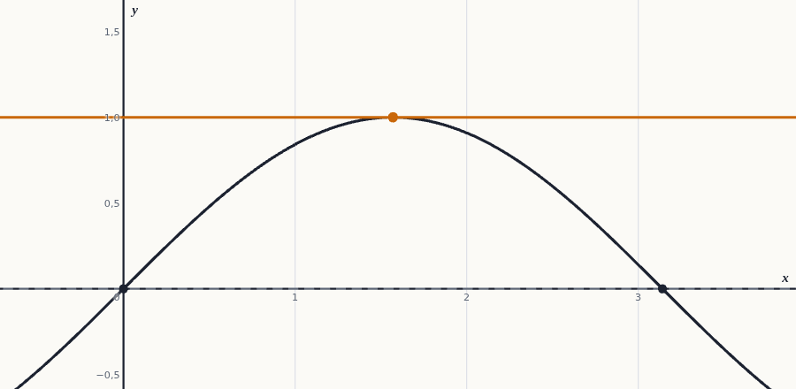
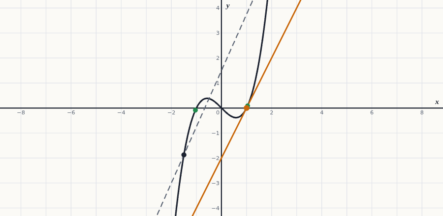

Teoremas de Rolle y del valor medio. Funciones monótonas
Cómo la derivada, que es información «local» en un punto, permite sacar conclusiones sobre toda una función en un intervalo: dónde hay tangentes horizontales, cuándo una función es constante, cuándo sube o baja.
Libro oficial: Cálculo para Ingenieros, §2.5 (pp. 94-101)Ejercicios: E Ej. 2.39–2.51 (pp. 76-86)⏱ ~5 h de estudio
U oficial
S Stewart
L Larson
E ejercicios
P propio
X exámenes
— pasa el ratón (o toca) por cada etiqueta para ver libro y página; en pantallas anchas aparecen en el margen derecho.
La idea del tema en una frase
La derivada es información local (la pendiente en un punto), pero con unas pocas hipótesis permite sacar conclusiones sobre todo un intervalo: si sales y vuelves a la misma altura, en algún momento la pendiente fue $0$ (Rolle); en algún momento la pendiente igualó a la media (valor medio); y de ahí se deduce que, si $f'=0$, $f$ es constante, y que el signo de $f'$ dice dónde sube y dónde baja.
Es el viaje en coche: si has hecho 180 km en 2 h, en algún instante el velocímetro marcó 90 km/h; si el velocímetro marcó siempre $0$, no te has movido.
Si solo tienes un rato, llévate esto. El resto de la página lo desarrolla con ejemplos y ejercicios.
Método en 4 pasos
Identifica qué te piden: un punto con $f'$ conocida (tangente horizontal o paralela a la cuerda), el número de soluciones de $f(x)=0$, una cota o desigualdad, dónde sube o baja $f$, o probar que algo es constante.
Comprueba las hipótesis una a una: continua en el cerrado $[a,b]$, derivable en el abierto $(a,b)$ y, solo para Rolle, $f(a)=f(b)$. Si falla una, el teorema no se puede usar.
Aplica el teorema y traduce el $c$ a lo que piden: $f'(c)=0$ (tangente horizontal), $f'(c)=\frac{f(b)-f(a)}{b-a}$ (paralela a la cuerda), signo de $f'(c)$ (signo de $f(b)-f(a)$).
Si es verdadero/falso, para refutar basta un contraejemplo: un «pico» $|x|$, un salto, o un dominio que no es intervalo.
Qué hago según lo que piden
¿Tangente horizontal y $f(a)=f(b)$? $\to$ Rolle. ¿Tangente paralela a una cuerda, cota o desigualdad? $\to$ valor medio.
¿Cuántas soluciones tiene $f(x)=0$? $\to$ Bolzano (existe) + Rolle o estricta monotonía (como mucho una por tramo).
¿Dónde crece o decrece? $\to$ factoriza $f'$, ceros, un número de prueba por tramo y Prop. 2.4.
¿Probar que una expresión es constante, o que $f'=g'$ da $f=g+k$? $\to$ $f'=0$ en un intervalo y valor en un punto.
Intervalos de crecimiento con la tabla de signos; unicidad de raíces.
Bolzano: continua con $f(a)f(b)<0\Rightarrow$ hay raíz
Existencia de soluciones.
Qué cae
En los exámenes resueltos son preguntas cortas de 1 punto: enunciar o aplicar Rolle y el valor medio, los intervalos de crecimiento de una función con exponencial y contar soluciones con Bolzano más monotonía. En el libro de ejercicios son E 2.39-2.51 (las gráficas 2.50-2.51 usan además extremos y concavidad del Tema 3). Tabla completa por tipo: pestaña Examen.
U pp.94-100P
Camino de estudio: elige tu nivel
Empieza por «Mínimo»; luego «Completo» y, para nota alta, «Reto». Marca cada ejercicio al terminarlo.
Todo el tema (desmarca «Solo lo esencial»), con ampliaciones e interactivos.
E 2.39-2.49, los 6 exámenes y todas las prácticas.
🟣 Reto · ≈ +1 h
E 2.42, E 2.46, E 2.49, las gráficas E 2.50 y E 2.51 (requieren los extremos y la concavidad del Tema 3, §3.4-3.5) y las prácticas ★★.
Verás solo lo esencial; desmarca para ver todo.
0Antes de empezar U p.94
Qué necesitas saber ya.
Continuidad y teorema de Bolzano (U §1.4, p. 52): una función continua en un intervalo que cambia de signo se anula en algún punto.
Derivada como pendiente de la recta tangente, y las reglas de derivación (U §2.1-2.2). Recuerda que derivable en un punto implica continua en ese punto.
Derivadas laterales (U Def. 2.3, p. 81): $f'(a^+)$ y $f'(a^-)$; si existen y coinciden, hay derivada.
Límites en el infinito y asíntotas (U §1.4, pp. 48-49) para los ejercicios de gráficas.
Mapa del tema: qué se pide en los ejercicios y en el examen. Todo el tema es una cadena de consecuencias: Rolle (tangente horizontal) $\Rightarrow$ valor medio (tangente paralela a la cuerda) $\Rightarrow$ funciones constantes ($f'=0$) $\Rightarrow$ monotonía (signo de $f'$) $\Rightarrow$ aplicación a identificar gráficas. En E son los ejercicios 2.39-2.51 (todos resueltos abajo): reconocer cuándo se puede aplicar Rolle o el valor medio, razonar con la definición de monotonía y con el signo de $f'$, y elegir la gráfica correcta. La orientación de U es una sola frase clave: fíjese en la importancia de que todas las hipótesis de un teorema se cumplan para poder aplicarlo. U p.94
Dos prerrequisitos
Los ejercicios 2.50 y 2.51 (identificar gráficas) usan un mínimo de extremos relativos y concavidad (Tema 3, §3.4-3.5); lo estrictamente necesario está resumido en la sección 7. Las funciones hiperbólicas de E 2.45 se explican en la sección 6.
1Idea general: de Bolzano a Rolle U p.94
Lo que vas a aprender. a entender por qué el paso de Bolzano a Rolle es natural: misma altura al salir y al volver implica pendiente cero en algún punto.
Idea intuitiva
Bolzano decía: si una función continua pasa de negativa a positiva, en algún momento vale cero. Rolle dice algo parecido, pero para la derivada: si sales de un punto y vuelves a la misma altura, en algún momento tu pendiente fue cero. Piensa en lanzar una pelota hacia arriba: sale de la mano a una altura y vuelve a la misma altura; en el punto más alto la velocidad es exactamente $0$.
S p.284
El plan de U: del teorema de Rolle se obtiene el del valor medio, y de este las condiciones para que una función sea constante, creciente o decreciente.
2Teorema de Rolle U p.95
Lo que vas a aprender. a enunciar Rolle, comprobar sus tres hipótesis y usarlo para hallar tangentes horizontales o acotar el número de raíces.
Cómo lo reconoces: «Existe un punto con $f'=0$», «tangente horizontal», o «a lo sumo tantas raíces como…».
Qué haces: Compruebas las tres hipótesis en una lista y concluyes $f'(c)=0$ con $c\in(a,b)$.
Ejemplo mínimo: $f(x)=x^2-4x+1$ en $[0,4]$: $f(0)=f(4)=1$, $c=2$.
Teorema de Rolle
Sea $f:[a,b]\to\mathbb R$ continua en $[a,b]$, derivable en $(a,b)$ y con $f(a)=f(b)$. Entonces existe al menos un $c\in(a,b)$ tal que $f'(c)=0$.
U p.95S p.284L p.170
Idea intuitiva y por qué es cierto
Dibuja una curva suave que empieza y acaba a la misma altura: si sube, tiene que dar la vuelta para bajar, y en la cima la tangente es horizontal; si baja, pasa lo mismo en el valle; si se queda plana, todas las tangentes son horizontales. En detalle: una función continua en un intervalo cerrado alcanza un máximo y un mínimo (teorema de Weierstrass; en U es la Prop. 1.15). Si la función no es constante, alguno de los dos no está en los extremos (porque en los extremos vale lo mismo), luego se alcanza en un punto interior $c$; y en un máximo o mínimo interior donde la función es derivable, la derivada vale $0$ (teorema de Fermat: si $f$ es derivable en un punto interior $c$ donde tiene un máximo o mínimo relativo, entonces $f'(c)=0$).
U pp.52-53S p.284L p.170
Ejemplos de U
$f(x)=x^2$ en $[-1,1]$ cumple Rolle: $f(-1)=1=f(1)$ y $f'(x)=2x$ se anula en $x=0$ (Ej. 2.19). $\operatorname{sen}x$ cumple Rolle en cualquier $[a,a+2n\pi]$, $n\in\mathbb N$: es continua y derivable en todo $\mathbb R$ y $\operatorname{sen}a=\operatorname{sen}(a+2n\pi)$ (Ej. 2.20).
U p.95

Interactivo propio. Mueve $c$: la tangente (naranja) se desliza y su pendiente se lee debajo. Los puntos verdes son los $c$ con $f'(c)=0$. En las dos últimas funciones falla una hipótesis (derivabilidad o continuidad) y no hay ninguno. P
¿Qué pasa si falla una hipótesis? U pp.95-96
Las tres hipótesis son necesarias en el sentido de que, si se quita una, el teorema puede fallar. U lo muestra con tres ejemplos:
Izquierda: $f(0)\ne f(1)$. Centro: $|x|$ tiene un pico en $0$. Derecha: salto en $0$ (función no continua). En ninguna hay tangente horizontal.
$f(x)=x+1$ en $[0,1]$: continua y derivable, pero $f(0)=1\ne2=f(1)$; $f'=1$ nunca se anula.
$f(x)=|x|$ en $[-1,1]$: continua y $f(-1)=f(1)$, pero no derivable en $0$; $f'$ vale $-1$ o $1$, nunca $0$.
$f(0)=1$ y $f(x)=x$ si $0<x\le1$: derivable en $(0,1)$ y $f(0)=1=f(1)$, pero no continua en $0$; $f'=1$.
Error típico: leer el teorema al revés
Que falle una hipótesis no significa que la conclusión sea falsa. Por ejemplo $f(x)=x^3$ en $[-1,1]$ no cumple $f(-1)=f(1)$ y sin embargo $f'(0)=0$. Rolle da una condición suficiente, no necesaria: si se cumplen las tres hipótesis, seguro hay $c$; si no se cumplen, no se puede asegurar nada (puede haberlo o no).
U p.96
Ejemplo resuelto: aplicar Rolle (A1, propio)
Comprueba que $f(x)=x^2-4x+1$ cumple Rolle en $[0,4]$ y halla $c$.
Es un polinomio: continua y derivable en todo $\mathbb R$.
$f(0)=1$ y $f(4)=16-16+1=1$: coinciden.
$f'(x)=2x-4=0\iff x=2\in(0,4)$. Luego $c=2$.
propioL p.171
Ejemplo resuelto: a lo sumo una raíz (A3, propio)
Prueba que $x^3+3x+1=0$ tiene exactamente una solución real.
Existe (Bolzano): $p(x)=x^3+3x+1$ es continua, $p(-1)=-3<0<1=p(0)$; hay una raíz en $(-1,0)$.
Es única (Rolle, por reducción al absurdo): si hubiera dos raíces $r_1<r_2$, como $p(r_1)=p(r_2)=0$ y $p$ es polinomio, Rolle daría un $c\in(r_1,r_2)$ con $p'(c)=0$.
Pero $p'(x)=3x^2+3\ge3>0$ para todo $x$: contradicción. Luego solo hay una raíz (aprox. $-0{,}322$).
propioS p.285
Receta «tantas raíces como ceros de $f'$»: Bolzano da que hay raíz; Rolle dice que entre dos raíces de $f$ hay una raíz de $f'$. Si $f'$ no se anula nunca (o solo una vez), $f$ tiene a lo sumo una (o dos) raíces.
3Teorema del valor medio U p.96
Lo que vas a aprender. a enunciar el valor medio, hallar su $c$ y usarlo para cotas y desigualdades.
Cómo lo reconoces: Piden una tangente paralela a una cuerda, una cota de $f(b)-f(a)$ o una desigualdad.
Qué haces: Comprueba continuidad y derivabilidad, escribe $f(b)-f(a)=f'(c)(b-a)$ y acota o resuelve $f'(c)=$ pendiente.
Ejemplo mínimo: $5-\frac4x$ en $[1,4]$: pendiente $1$, $c=2$.
Idea intuitiva
Haces 180 km en 2 horas: tu velocidad media fue 90 km/h. El teorema dice que en algún instante el velocímetro marcó exactamente 90 km/h. Geométricamente: si inclinas la figura de Rolle para que los extremos ya no estén a la misma altura, en algún punto la tangente es paralela a la cuerda que une los extremos.
S p.287
Teorema del valor medio (de Lagrange)
Si $f:[a,b]\to\mathbb R$ es continua en $[a,b]$ y derivable en $(a,b)$, entonces existe al menos un $c\in(a,b)$ tal que
$$f'(c)=\frac{f(b)-f(a)}{b-a}.$$
U p.96S p.285L p.172
La diferencia con Rolle: ya no se exige $f(a)=f(b)$. Si se exige, el lado derecho vale $0$ y se recupera Rolle. El lado derecho es la pendiente de la cuerda (recta secante) por $(a,f(a))$ y $(b,f(b))$.

Interactivo propio. Cambia $a$ y $b$ para mover la cuerda (gris, discontinua) y $c$ para deslizar la tangente (naranja). Los puntos verdes son los $c$ donde la tangente es paralela a la cuerda: puede haber uno o varios. P
Demostración (Rolle aplicado a una función auxiliar)
Se resta a $f$ la recta que pasa por los dos extremos:
$$h(x)=f(x)-f(a)-\frac{f(b)-f(a)}{b-a}(x-a).$$
$h$ es continua en $[a,b]$ y derivable en $(a,b)$ (es $f$ menos un polinomio de grado 1).
$h(a)=0$ y $h(b)=f(b)-f(a)-\big(f(b)-f(a)\big)=0$.
Rolle da un $c\in(a,b)$ con $h'(c)=f'(c)-\dfrac{f(b)-f(a)}{b-a}=0$. $\square$
U pp.96-97S p.286
Error típico
El teorema dice que $c$ existe, no dice cuánto vale ni que sea único. Además, hay que comprobar las dos hipótesis (continuidad en el cerrado, derivabilidad en el abierto). Ejemplo (pruébalo en el interactivo): $f(x)=|x|$ en $[-1,2]$ es continua pero no derivable en $0$. La cuerda tiene pendiente $\tfrac{2-1}{3}=\tfrac13$, y $f'$ solo vale $1$ o $-1$: no existe $c$ con $f'(c)=\tfrac13$.
propio
Ejemplo resuelto: hallar $c$ (Larson)
$f(x)=5-\dfrac4x$ en $[1,4]$. La cuerda tiene pendiente $\dfrac{f(4)-f(1)}{4-1}=\dfrac{4-1}{3}=1$. Como $f'(x)=\dfrac4{x^2}$, se resuelve $\dfrac4{x^2}=1$, que da $x=\pm2$; solo $c=2$ está en $(1,4)$.
L p.173
Ejemplo resuelto: el TVM da desigualdades (A2, propio)
Demuestra que $|\operatorname{sen}a-\operatorname{sen}b|\le|a-b|$ para todos $a,b\in\mathbb R$.
Si $a=b$ no hay nada que probar. Si $a\lt b$, aplica el TVM a $\operatorname{sen}$ en $[a,b]$ (continua y derivable en $\mathbb R$).
Hay $c\in(a,b)$ con $\operatorname{sen}b-\operatorname{sen}a=\cos c\,(b-a)$.
Como $|\cos c|\le1$, queda $|\operatorname{sen}b-\operatorname{sen}a|\le|b-a|$.
propioS p.289
Receta «cota de $f'$ $\Rightarrow$ cota de incrementos»: si $|f'|\le M$ en $(a,b)$, entonces $|f(y)-f(x)|=|f'(c)|\,|y-x|\le M|y-x|$.
Ejemplo resuelto: acotar $f(2)$ (Stewart)
Si $f(0)=-3$ y $f'(x)\le5$ para todo $x$, el TVM en $[0,2]$ da $f(2)=f(0)+2f'(c)\le-3+2\cdot5=7$: $f(2)$ vale a lo sumo $7$.
S p.287
4Funciones constantes U p.97
Lo que vas a aprender. a probar que una función es constante (o que dos funciones difieren en una constante) con $f'=0$.
Cómo lo reconoces: Piden probar una identidad o que $f$ no depende de $x$.
Qué haces: Derivas, ves que da $0$ en un intervalo y calculas el valor en un punto.
Ejemplo mínimo: $\cosh^2x-\operatorname{senh}^2x$ tiene derivada $0$ y vale $1$ en $x=0$.
Idea intuitiva
Si tu velocidad es $0$ en todo momento, no te mueves: tu posición es constante. El valor medio es lo que convierte esta idea en teorema.
Teorema 2.4 (caracterización de las funciones constantes)
Sea $f$ derivable en el intervalo $(a,b)$. Entonces $f$ es constante en $(a,b)$ si y solo si $f'(x)=0$ para todo $x\in(a,b)$.
U p.97S p.287L p.177
Por qué: «$\Rightarrow$» es la derivada de una constante. Para «$\Leftarrow$», dados $x_1<x_2$ en $(a,b)$, el TVM da $f(x_2)-f(x_1)=f'(c)(x_2-x_1)=0$.
Consecuencia: misma derivada, misma función salvo constante
Si $f'(x)=g'(x)$ para todo $x$ de un intervalo, entonces $f(x)-g(x)=k$ constante en ese intervalo. (Se aplica el Teorema 2.4 a $h=f-g$.) Ejemplo de U: $x$ y $x+\pi$.
U p.97S p.288
Error típico: «intervalo» no es un detalle
La hipótesis es que el dominio sea un intervalo. Sin ella, falla: $f(x)=\dfrac{x}{|x|}$ vale $-1$ si $x<0$ y $1$ si $x>0$; tiene $f'=0$ en todo su dominio $\mathbb R\setminus\{0\}$, pero no es constante, porque el dominio son dos trozos separados (en cada trozo sí es constante).
S p.288
5Funciones monótonas U p.98
Lo que vas a aprender. a hallar dónde crece y decrece una función con la tabla de signos de $f'$ y a razonar la monotonía con la definición.
Cómo lo reconoces: Piden «intervalos de crecimiento y decrecimiento» o si $f$ es (estrictamente) creciente.
Qué haces: Derivas, factorizas, hallas los ceros de $f'$, un valor de prueba por tramo y aplicas la Prop. 2.4.
«Creciente» significa que, al avanzar hacia la derecha, la gráfica no baja. Y la pendiente de la tangente es la derivada: pendiente positiva $\Rightarrow$ la curva sube, pendiente negativa $\Rightarrow$ baja.
Definición 2.5 (monotonía)
Creciente en un intervalo $I$: $f(a)\le f(b)$ para todos $a,b\in I$ con $a\lt b$.
Decreciente en $I$: $f(b)\le f(a)$ para todos $a,b\in I$ con $a\lt b$.
Estrictamente creciente (estrictamente decreciente): con $f(a)\lt f(b)$ ($f(b)\lt f(a)$).
Monótona: creciente o decreciente.
Toda estrictamente creciente es creciente (y monótona).
U p.98
Proposición 2.4 (el signo de $f'$ da la monotonía)
Sea $f$ derivable en el intervalo $I$.
Si $f'(x)>0$ para todo $x\in I$, $f$ es estrictamente creciente en $I$.
Si $f'(x)<0$ para todo $x\in I$, $f$ es estrictamente decreciente en $I$.
Si $f'(x)\ge0$ ($f'(x)\le0$) para todo $x\in I$, $f$ es creciente (decreciente) en $I$.
U p.98S p.290L p.177
Demostración (valor medio)
Sean $a\lt b$ en $I$. El TVM da $c\in(a,b)$ con $f(b)-f(a)=f'(c)(b-a)$. Como $b-a>0$, el signo de $f(b)-f(a)$ es el de $f'(c)$. Si $f'>0$ en $I$, entonces $f(b)-f(a)>0$. Los otros casos son iguales. $\square$
U p.98
Variante: monotonía en el intervalo cerrado
Si $f$ es continua en $[a,b]$ y derivable en $(a,b)$ con $f'>0$ en $(a,b)$, entonces $f$ es estrictamente creciente en el cerrado $[a,b]$. Vale incluso si $f'=0$ en un número finito de puntos de $(a,b)$: así se ve que $x^3$ es estrictamente creciente en $\mathbb R$.
L p.177
Error típico: la proposición es solo «en un sentido»
Es una condición suficiente, no necesaria: hay funciones monótonas sin derivada (con un salto: U Ej. 2.21). Si $f$ es creciente y derivable en $x$, el cociente $\frac{f(x+h)-f(x)}{h}$ es $\ge0$ tanto para $h>0$ como para $h<0$, luego $f'(x)\ge0$. En cambio «estrictamente creciente $\Rightarrow f'>0$» es falso ($x^3$, U Ej. 2.22; U p. 99 comenta que el recíproco falla incluso con $f'$ continua).
U pp.98-99
Ejemplo de U: $x^3$ es estrictamente creciente aunque $f'(0)=0$
$f'(x)=3x^2>0$ en $(-\infty,0)$ y en $(0,\infty)$: estrictamente creciente en cada uno.
Para $x>0$: $f(0)=0<x^3=f(x)$, luego es estrictamente creciente en $[0,\infty)$; igual en $(-\infty,0]$.
Enlazando los dos trozos en el punto $0$, es estrictamente creciente en todo $\mathbb R$.
U p.99
Ejemplo de U: intervalos de crecimiento de $f(x)=xe^{1-x}$
$f'(x)=e^{1-x}-xe^{1-x}=(1-x)e^{1-x}$. Como la exponencial es siempre positiva, el signo lo da $1-x$: $f'>0$ si $x<1$ y $f'<0$ si $x>1$. Luego $f$ es estrictamente creciente en $(-\infty,1)$ y estrictamente decreciente en $(1,\infty)$.
U pp.99-100
Monotonía de $f(x)=x^3-3x$: sube donde $f'>0$, baja donde $f'<0$; en $x=\pm1$ la tangente es horizontal.
Receta «intervalos de monotonía» (tabla de signos): (1) deriva y factoriza; (2) quita los factores de signo fijo (exponenciales, $x^2+1$…); (3) halla los ceros y los puntos donde $f'$ no existe: dividen el dominio en intervalos; (4) mira el signo de $f'$ en un punto de prueba de cada intervalo; (5) aplica la Prop. 2.4 en cada uno.
Ejemplo resuelto: $f(x)=x^3-3x$ (B1, propio)
$f'(x)=3x^2-3=3(x-1)(x+1)$: es $+$ en $(-\infty,-1)$, $-$ en $(-1,1)$ y $+$ en $(1,\infty)$. Luego $f$ es estrictamente creciente en $(-\infty,-1)$ y $(1,\infty)$, y estrictamente decreciente en $(-1,1)$. Máximo relativo $f(-1)=2$ y mínimo relativo $f(1)=-2$.
propioL p.178
Ejemplo resuelto: demostrar una desigualdad (B2, propio)
Prueba que $\ln(1+x)\lt x$ para todo $x>0$.
Sea $h(x)=\ln(1+x)-x$ en $[0,\infty)$. Entonces $h(0)=0$.
$h'(x)=\dfrac1{1+x}-1=\dfrac{-x}{1+x}<0$ si $x>0$ (pero $h'(0)=0$, así que la Prop. 2.4 no se aplica tal cual en todo $[0,\infty)$).
Se usa el TVM directamente: para $x>0$, $h(x)-h(0)=h'(c)\,x$ con $c\in(0,x)$, y $h'(c)<0$. Luego $h(x)<h(0)=0$. $\square$
propio
Ejemplo resuelto: $f'$ se anula pero sigue siendo estrictamente creciente (B3, propio)
¿Es $f(x)=x+\operatorname{sen}x$ estrictamente creciente en $\mathbb R$?
$f'(x)=1+\cos x\ge0$, y vale $0$ solo en $x=(2k+1)\pi$ (puntos aislados). Por la Prop. 2.4, $f$ es creciente.
Para ver que es estrictamente creciente: sean $a\lt b$. En $[a,b]$ hay solo un número finito de ceros de $f'$; cortan $[a,b]$ en subintervalos $[z_i,z_{i+1}]$ en cuyo interior $f'>0$.
En cada uno, el TVM da $f(z_{i+1})-f(z_i)=f'(c_i)(z_{i+1}-z_i)>0$. Sumando todos, $f(b)>f(a)$. $\square$
Es la misma idea que $x^3$: que $f'$ se anule en puntos aislados no rompe la monotonía estricta.
propio
6Funciones hiperbólicas (para E 2.45) S p.257
Lo que vas a aprender. las funciones $\operatorname{senh}$, $\cosh$ y $\tanh$, que aparecen en E 2.45.
Aparecen en el enunciado de E 2.45; conviene conocerlas.
Dominio de $\operatorname{senh}$ y $\cosh$: todo $\mathbb R$. Recorrido de $\operatorname{senh}$: $\mathbb R$; recorrido de $\cosh$: $[1,\infty)$.
S p.257L p.383
$\cosh$ (azul) es par y $\ge1$; $\operatorname{senh}$ (naranja) es impar y estrictamente creciente.
Propiedades que se usan
$(\cosh x)'=\operatorname{senh}x$ y $(\operatorname{senh}x)'=\cosh x$ (sin el signo menos de $\cos$).
$\cosh x+\operatorname{senh}x=e^x$ y $\cosh x-\operatorname{senh}x=e^{-x}$.
$\cosh^2x-\operatorname{senh}^2x=1$ (se prueba en E 2.45 d): el punto $(\cosh t,\operatorname{senh}t)$ recorre la hipérbola $X^2-Y^2=1$ (de ahí el nombre), como $(\cos t,\operatorname{sen}t)$ recorre la circunferencia.
S p.259E p.80
Ejemplo resuelto: $\tanh$ (C1, propio)
Por la regla del cociente, $(\tanh x)'=\dfrac{\cosh x\cosh x-\operatorname{senh}x\operatorname{senh}x}{\cosh^2x}=\dfrac1{\cosh^2x}=1-\tanh^2x$, usando $\cosh^2-\operatorname{senh}^2=1$ (E 2.45 d).
propio
Ejemplo resuelto: monotonía y mínimo de $\cosh$ (C2, propio)
$(\operatorname{senh})'=\cosh x=\dfrac{e^x+e^{-x}}2>0$, luego $\operatorname{senh}$ es estrictamente creciente. Para $\cosh$: $(\cosh x)'=\operatorname{senh}x$ es $\lt0$ si $x\lt0$ (porque $e^x\lt e^{-x}$) y $>0$ si $x>0$, así que $\cosh$ decrece hasta $0$ y luego crece: mínimo absoluto $\cosh0=1$.
propio
7Lo mínimo de extremos y concavidad (del Tema 3, para E 2.50-2.51) U pp.126-137
Lo que vas a aprender. lo mínimo de extremos y concavidad del Tema 3 que necesitan E 2.50-2.51 (adelanto, no es de este tema).
Esta sección es un adelanto: solo lo que hace falta para identificar gráficas. Se estudia con calma en el tema 3.4-3.5.
Punto crítico y extremos
Punto crítico de $f$ continua en $[a,b]$: un $c\in(a,b)$ con $f'(c)=0$ o donde $f$ no es derivable.
Máximo (mínimo) relativo en $c$: existe un intervalo abierto $I$ que contiene a $c$ tal que $f(c)\ge f(x)$ ($f(c)\le f(x)$) para todo $x\in I$.
Punto de silla: punto crítico donde no hay extremo relativo.
U pp.126-131
Cómo detectarlos (Prop. 3.5, 3.7 y 3.8)
Cambio de monotonía (primera derivada). Sea $f$ continua en $c$. Si decrece a la izquierda de $c$ y crece a la derecha, hay mínimo relativo en $c$; si crece y luego decrece, máximo relativo. Si $f'$ tiene el mismo signo a ambos lados, no hay extremo (Larson, Teorema 3.6, apartado 3, p. 179).
Segunda derivada. Si $f'(c)=0$ y $f''(c)>0$, mínimo; si $f''(c)\lt0$, máximo.
Derivadas de orden superior. Si $f''(c)=0$, se sigue derivando: si la primera derivada no nula es de orden par hay extremo (máximo si es negativa, mínimo si es positiva); si es de orden impar, punto de silla.
U pp.130-132L p.179
Error típico
«$f'(c)=0$ implica máximo o mínimo» es falso: $x^3$ en $0$ tiene $f'(0)=0$ y no tiene extremo (es punto de silla). Un punto crítico solo es un candidato.
U p.131
Convexidad e inflexión
En U (Def. 3.8-3.9), una función es convexa si tiene forma de $x^2$ (gráfica por debajo de sus cuerdas) y cóncava si $-f$ es convexa (forma de $\ln x$). Con $f$ dos veces derivable: $f''\ge0$ en $I$ $\Rightarrow$ convexa; $f''\le0$ $\Rightarrow$ cóncava. Un punto de inflexión es donde cambia una por otra (si $f$ es dos veces derivable, en él $f''=0$: U Prop. 3.11).
U pp.135-137
8Identificar y esbozar gráficas S pp.310-311
Lo que vas a aprender. a descartar gráficas con dominio, límites, cortes y signo de $f'$.
Cómo lo reconoces: Piden elegir la gráfica de una función entre cuatro figuras.
Qué haces: Descartas figuras con dominio, asíntotas, cortes y signo de $f'$, de lo más barato a lo más caro.
Ejemplo mínimo: $x^2+\frac1x$: sube a $+\infty$ en $\pm\infty$; sobran las figuras con asíntota horizontal.
E 2.50-2.51 lo piden. Sirve este orden, de lo más barato a lo más caro:
Receta «identificar una gráfica»: (1) dominio y asíntotas verticales; (2) límites en $\pm\infty$ (asíntotas horizontales u oblicuas, U §1.4 pp. 48-49); (3) cortes con los ejes y signo; (4) signo de $f'$ (monotonía y extremos); (5) si aún hay dudas, $f''$. Descarta una figura en cuanto un dato la contradiga.
Ejemplo resuelto: $f(x)=x+\dfrac1x$ (D1, propio)
Dominio $\mathbb R\setminus\{0\}$; impar. Asíntota vertical $x=0$ y oblicua $y=x$ (porque $f(x)-x=1/x\to0$). $f'(x)=\dfrac{(x-1)(x+1)}{x^2}$: crece en $(-\infty,-1)$ y $(1,\infty)$, decrece en $(-1,0)$ y $(0,1)$. Máximo relativo $f(-1)=-2$ y mínimo relativo $f(1)=2$.
Escribe $f(x)=x+1+\dfrac1{x-1}$: asíntota vertical $x=1$ ($+\infty$ a la derecha, $-\infty$ a la izquierda) y oblicua $y=x+1$. $f'(x)=\dfrac{x(x-2)}{(x-1)^2}$: crece en $(-\infty,0)$ y $(2,\infty)$, decrece en $(0,1)$ y $(1,2)$. Máximo relativo $f(0)=0$ y mínimo relativo $f(2)=4$.
propio
Ejemplo resuelto: $f(x)=xe^{-x^2}$ (D3, propio)
Impar. $\lim_{x\to\pm\infty}xe^{-x^2}=0$ (la exponencial domina): asíntota horizontal $y=0$. $f'(x)=(1-2x^2)e^{-x^2}$: crece en $\big(-\tfrac1{\sqrt2},\tfrac1{\sqrt2}\big)$ y decrece fuera; máximo $f(\tfrac1{\sqrt2})=\tfrac1{\sqrt{2e}}\approx0{,}43$ y mínimo simétrico. $f''(x)=2x(2x^2-3)e^{-x^2}$ cambia de signo en $0$ y en $\pm\sqrt{3/2}$: 3 puntos de inflexión. Es la versión difícil de U Ej. 2.23.
propio
9Mapa de decisión: qué teorema aplico y cuántas raíces hay P
Lo que vas a aprender. qué teorema usar, y cuántas raíces tiene una ecuación, en cuanto leas lo que te piden (mapa de decisión y, desplegable, tabla con el detalle).
Léelo de arriba abajo: en cada pregunta, «no» baja y «sí» te lleva a la acción de la derecha. Al final, antes de aplicar, comprueba siempre las hipótesis: es lo que más puntos se pierde en este tema.
Ver la tabla con el detalle de cada caso
Piden…
Herramienta
Ojo con…
Que existe una solución de $f(x)=0$
Bolzano: $f$ continua en $[a,b]$ y $f(a)f(b)<0$
Sin continuidad no vale (E: salto en $0$)
Que hay como mucho $k$ soluciones
Rolle: entre dos ceros de $f$ hay uno de $f'$; o $f$ estrictamente monótona
Si $f'$ no se anula, a lo sumo una raíz
Una tangente horizontal
Rolle ($f(a)=f(b)$)
$c$ está en el abierto $(a,b)$
Una tangente paralela a la cuerda
Valor medio
No se pide $f(a)=f(b)$; basta derivable en el abierto
Una cota de $f(b)-f(a)$
Valor medio con $|f'|\le M$
Multiplicar por la longitud $b-a$
Una desigualdad entre funciones
$h=f-g$, $h(a)=0$ y signo de $h'$ con el TVM
$h'$ puede anularse en un punto
Dónde crece o decrece
Signo de $f'$ (Prop. 2.4) en cada intervalo
Nombrar cada intervalo por separado; no unir $A\cup B$
Que algo es constante
$f'=0$ en un intervalo (Teor. 2.4)
El dominio debe ser un intervalo
Método en cinco pasos para el examen
Traduce lo que piden a una de las filas del mapa.
Escribe las hipótesis del teorema y comprueba cada una (continua en $[a,b]$, derivable en $(a,b)$, $f(a)=f(b)$ si es Rolle).
Aplica el teorema y escribe qué dice de $c$.
Traduce $c$ a la pregunta (tangente, signo, cota, número de raíces).
Si es V/F y es falso, da un contraejemplo concreto.
P
10Practica P
Lo que vas a aprender. a resolver tú solo un ejemplo de cada tipo. Intenta cada uno antes de abrir la pista; empieza por los ★ (los ★★ son ampliación).
Ahora hazlo tú
Antes de calcular, decide qué te piden: un punto donde $f'$ vale algo (Rolle/TVM), cuántas soluciones hay (Bolzano + Rolle), una cota (TVM con $|f'|$ acotada) o por dónde sube y baja $f$ (signo de $f'$). Y comprueba siempre las hipótesis: intervalo, continuidad en el cerrado, derivabilidad en el abierto.
Rolle: comprobar las hipótesis y hallar $c$
★ Básico Práctica a1 · Rolle con seno y coseno P
Comprueba que $f(x)=\operatorname{sen}x+\cos x$ cumple las hipótesis del teorema de Rolle en $\left[0,\frac\pi2\right]$ y halla el punto $c$ que garantiza.
Pista
Tres comprobaciones: continua en el cerrado, derivable en el abierto, mismo valor en los extremos. Después resuelve $f'(x)=0$ y quédate con las soluciones de $\left(0,\frac\pi2\right)$; dividir entre $\cos x$ convierte la ecuación en una de tangente.
Ver solución
Continuidad y derivabilidad: $\operatorname{sen}$ y $\cos$ son derivables en todo $\mathbb R$ (tabla, U p.79), luego su suma también; en particular $f$ es continua en $\left[0,\frac\pi2\right]$ y derivable en $\left(0,\frac\pi2\right)$.
Extremos: $f(0)=0+1=1$ y $f\left(\frac\pi2\right)=1+0=1$. Coinciden.
Rolle (U p.95): existe $c\in\left(0,\frac\pi2\right)$ con $f'(c)=0$.
Hallarlo: $f'(x)=\cos x-\operatorname{sen}x=0\iff\operatorname{sen}x=\cos x$. En $\left(0,\frac\pi2\right)$ es $\cos x>0$, así que se puede dividir: $\operatorname{tg}x=1$, cuya única solución en ese intervalo es $x=\frac\pi4$.
Comprobación: $f'\left(\frac\pi4\right)=\frac{\sqrt2}2-\frac{\sqrt2}2=0$ y $0<\frac\pi4<\frac\pi2$.
Resultado: $c=\frac\pi4$
★★ Medio Práctica a2 · $\sqrt[3]{x^2}$: misma altura y sin tangente horizontal P
Sea $f(x)=\sqrt[3]{x^2}$ en $[-1,1]$. Comprueba que $f(-1)=f(1)$ pero que $f'$ no se anula en ningún punto de $(-1,1)$. ¿Contradice esto el teorema de Rolle?
Pista
Fuera de $0$ usa la regla de la potencia. En $x=0$ la fórmula de $f'$ no sirve: calcula el cociente incremental $\frac{f(h)-f(0)}h$ y mira si tiene límite finito.
Ver solución
Extremos: $f(-1)=\sqrt[3]{1}=1$ y $f(1)=1$. Coinciden. Además $f$ es continua en $[-1,1]$ (raíz cúbica de un polinomio).
Derivada fuera de $0$ (tabla, $u^c$ con $c=\frac23$, U p.80): $f'(x)=\dfrac{2}{3\sqrt[3]x}$ para $x\neq0$. Una fracción con numerador $2$ nunca vale $0$.
En $x=0$ (U Def. 2.1, p.75): $\dfrac{f(h)-f(0)}h=\dfrac{\sqrt[3]{h^2}}h=\dfrac1{\sqrt[3]h}$, que tiende a $+\infty$ si $h\to0^+$ y a $-\infty$ si $h\to0^-$. No hay límite finito: $f$ no es derivable en $0$ (la gráfica tiene un pico en el origen).
¿Contradicción? No. Rolle (U p.95) exige que $f$ sea derivable en todo $(-1,1)$, y falla en $x=0\in(-1,1)$. Sin esa hipótesis, el teorema no promete nada, y aquí, de hecho, no hay tangente horizontal.
Resultado: $f(-1)=f(1)=1$ pero no existe $c$ con $f'(c)=0$: falla la derivabilidad en $x=0$
¿Cuántas raíces? Bolzano para que existan, Rolle para que no sobren
★ Básico Práctica b1 · $x^5+x-1=0$: una sola raíz P
Demuestra que la ecuación $x^5+x-1=0$ tiene exactamente una solución real y localízala entre dos enteros consecutivos.
Pista
Dos partes. Existe: busca dos enteros donde $p(x)=x^5+x-1$ cambie de signo (Bolzano). No hay otra: si hubiera dos raíces, Rolle daría un cero de $p'$; mira si $p'$ puede anularse.
Ver solución
Existencia (Bolzano, U p.52): $p(x)=x^5+x-1$ es un polinomio, continuo en $[0,1]$, con $p(0)=-1<0$ y $p(1)=1>0$. Hay al menos una raíz en $(0,1)$.
Unicidad, por reducción al absurdo: si hubiera dos raíces $r_1<r_2$, como $p(r_1)=p(r_2)=0$ y $p$ es derivable, Rolle (U p.95) daría $c\in(r_1,r_2)$ con $p'(c)=0$.
Pero $p'$ no se anula: $p'(x)=5x^4+1\ge1>0$ para todo $x$. Contradicción: solo hay una raíz.
Afinando (opcional): $p(0{,}75)\approx-0{,}013<0$ y $p(0{,}76)\approx0{,}014>0$, así que la raíz está en $(0{,}75;\,0{,}76)$.
Resultado: exactamente una raíz real, en $(0,1)$ ($\approx0{,}755$)
★★ Medio Práctica b2 · $x^3-12x+1=0$: exactamente tres raíces P
Demuestra que $x^3-12x+1=0$ tiene exactamente tres soluciones reales e indica un intervalo que contenga a cada una.
Pista
Evalúa $p(x)=x^3-12x+1$ en $-4,-3,0,1,4$ y cuenta los cambios de signo (Bolzano da «al menos»). Para «como mucho tres»: si hubiera cuatro raíces, Rolle daría tres ceros distintos de $p'$, que es de grado $2$.
Ver solución
Tabla de valores: $p(-4)=-15$, $p(-3)=10$, $p(0)=1$, $p(1)=-10$, $p(4)=17$.
Al menos tres (Bolzano, U p.52, en cada intervalo; $p$ es continua): cambia de signo en $(-4,-3)$, en $(0,1)$ y en $(1,4)$. Los tres intervalos no se solapan, así que son tres raíces distintas.
Como mucho tres: si hubiera cuatro raíces $r_1<r_2<r_3<r_4$, Rolle (U p.95) en $[r_1,r_2]$, $[r_2,r_3]$ y $[r_3,r_4]$ daría tres puntos distintos donde $p'=0$.
Pero $p'(x)=3x^2-12=3(x-2)(x+2)$ solo se anula en $x=\pm2$: dos puntos. Contradicción.
Conclusión: exactamente tres raíces (aprox. $-3{,}505$; $0{,}083$; $3{,}422$). Fíjate en que los ceros de $p'$ separan las raíces: $-3{,}505<-2<0{,}083<2<3{,}422$.
Resultado: exactamente tres raíces reales, en $(-4,-3)$, $(0,1)$ y $(1,4)$
Valor medio: el $c$ concreto
★ Básico Práctica c1 · el $c$ de $x^3$ en $[0,3]$ P
Comprueba que $f(x)=x^3$ cumple las hipótesis del teorema del valor medio en $[0,3]$ y halla el valor $c$ que proporciona.
Pista
Calcula la pendiente de la cuerda $\frac{f(3)-f(0)}{3-0}$ e iguálala a $f'(c)=3c^2$. De las soluciones, solo vale la que está en el intervalo abierto.
Ver solución
Hipótesis: $x^3$ es un polinomio: continuo en $[0,3]$ y derivable en $(0,3)$.
Pendiente de la cuerda: $\dfrac{f(3)-f(0)}{3-0}=\dfrac{27-0}{3}=9$.
TVM (U p.96): existe $c\in(0,3)$ con $f'(c)=9$, es decir $3c^2=9$, $c^2=3$, $c=\pm\sqrt3$.
Elegir: $-\sqrt3\notin(0,3)$; $\sqrt3\approx1{,}732\in(0,3)$. En ese punto la tangente es paralela a la cuerda que une $(0,0)$ con $(3,27)$.
Resultado: $c=\sqrt3$
★★ Medio Práctica c2 · $\sqrt x$ en $[0,4]$: basta la derivabilidad en el abierto P
La función $f(x)=\sqrt x$ no es derivable en $x=0$. ¿Se puede aplicar el teorema del valor medio en $[0,4]$? Si es así, halla $c$.
Pista
Relee las hipótesis del TVM: ¿dónde se pide la continuidad y dónde la derivabilidad? $0$ es un extremo del intervalo, no un punto interior.
Ver solución
Hipótesis del TVM (U p.96): continua en el cerrado $[0,4]$ y derivable en el abierto $(0,4)$. No se pide nada sobre la derivada en los extremos.
Continuidad: $\sqrt x$ es continua en $[0,+\infty)$, en particular en $[0,4]$.
Derivabilidad: para $x>0$, $f'(x)=\dfrac1{2\sqrt x}$ (U p.80). Todo punto de $(0,4)$ es $>0$. Que no sea derivable en $0$ no importa: $0\notin(0,4)$. Sí se puede aplicar.
★ Básico Práctica d1 · acotar $\sqrt{101}$ sin calculadora P
Usa el teorema del valor medio para $f(x)=\sqrt x$ en $[100,101]$ y demuestra que $10<\sqrt{101}<10{,}05$.
Pista
El TVM da $\sqrt{101}-\sqrt{100}=f'(c)\cdot1$ con $100<c<101$. No sabes cuánto vale $c$, pero sí que $\sqrt c>\sqrt{100}=10$: con eso acotas $f'(c)$.
Ver solución
Hipótesis: $\sqrt x$ es continua en $[100,101]$ y derivable en $(100,101)$, con $f'(x)=\frac1{2\sqrt x}$ (U p.80).
TVM (U p.96): existe $c\in(100,101)$ con $\sqrt{101}-\sqrt{100}=\dfrac1{2\sqrt c}\,(101-100)$, es decir $\sqrt{101}=10+\dfrac1{2\sqrt c}$.
Cota inferior: $\frac1{2\sqrt c}>0$, luego $\sqrt{101}>10$.
Cota superior: como $c>100$, $\sqrt c>10$ y $\frac1{2\sqrt c}<\frac1{20}=0{,}05$. Luego $\sqrt{101}<10{,}05$.
Comprobación: $\sqrt{101}\approx10{,}0499$. (Usando además $\sqrt c<11$ se obtiene $\sqrt{101}>10+\frac1{22}\approx10{,}045$: la estimación es muy fina.)
Resultado: $10<\sqrt{101}<10{,}05$
★★ Medio Práctica d2 · dos cotas para $\ln\frac ba$ P
Demuestra que, si $0<a<b$, entonces $\dfrac{b-a}{b}<\ln\dfrac ba<\dfrac{b-a}{a}$. Deduce una cota para $\ln\left(1+\frac1n\right)$, $n\in\mathbb N$.
Pista
$\ln\frac ba=\ln b-\ln a$: es la diferencia de valores que aparece en el TVM para $\ln$ en $[a,b]$. Después acota $\frac1c$ sabiendo que $a<c<b$. Para la segunda parte, toma $a=n$, $b=n+1$.
Ver solución
Hipótesis: $\ln$ es continua y derivable en $(0,+\infty)$, que contiene a $[a,b]$; $(\ln x)'=\frac1x$ (U p.79).
TVM (U p.96): existe $c\in(a,b)$ con $\ln b-\ln a=\dfrac1c\,(b-a)$.
Acotar $\frac1c$: de $0<a<c<b$ se sigue $\frac1b<\frac1c<\frac1a$ (al invertir números positivos se da la vuelta a la desigualdad).
Multiplicar por $b-a>0$ (no cambia el sentido): $\dfrac{b-a}b<\dfrac{b-a}c=\ln\dfrac ba<\dfrac{b-a}a$.
Con $a=n$, $b=n+1$: $b-a=1$ y $\frac ba=1+\frac1n$, así que $\dfrac1{n+1}<\ln\left(1+\dfrac1n\right)<\dfrac1n$. Ejemplo $n=1$: $0{,}5<\ln2\approx0{,}693<1$.
Resultado: $\dfrac{b-a}{b}<\ln\dfrac ba<\dfrac{b-a}{a}$; con $b=n+1$, $a=n$: $\dfrac1{n+1}<\ln\left(1+\dfrac1n\right)<\dfrac1n$
Monotonía: tabla de signos de $f'$
★ Básico Práctica e1 · $x^4-8x^2$: cuatro tramos P
Halla los intervalos de crecimiento y decrecimiento de $f(x)=x^4-8x^2$.
Pista
Deriva y factoriza del todo: $f'(x)=4x(x^2-4)$ y $x^2-4$ es una diferencia de cuadrados. Los ceros de $f'$ parten la recta en cuatro tramos; un número de prueba en cada uno.
Ver solución
Derivar y factorizar: $f'(x)=4x^3-16x=4x(x^2-4)=4x(x-2)(x+2)$.
Un número de prueba por tramo: $f'(-3)=4(-3)(-5)(-1)=-60<0$; $f'(-1)=4(-1)(-3)(1)=12>0$; $f'(1)=4(1)(-1)(3)=-12<0$; $f'(3)=4(3)(1)(5)=60>0$. (En cada tramo $f'$ no se anula y es continua, así que no puede cambiar de signo dentro: basta un punto.)
Leer la conclusión (Prop. 2.4, U p.98, en cada intervalo abierto): estrictamente decreciente en $(-\infty,-2)$ y en $(0,2)$; estrictamente creciente en $(-2,0)$ y en $(2,+\infty)$.
Coherencia: $f(-2)=f(2)=-16$ y $f(0)=0$: baja hasta $-16$, sube a $0$, baja a $-16$ y sube. La función es par, y la tabla es simétrica como debe.
Resultado: decreciente en $(-\infty,-2)$ y $(0,2)$; creciente en $(-2,0)$ y $(2,+\infty)$
★★ Medio Práctica e2 · $\frac{\ln x}x$ y quién es mayor, $\pi^e$ o $e^\pi$ P
Estudia la monotonía de $f(x)=\dfrac{\ln x}{x}$ en $(0,+\infty)$ y úsala para decidir, sin calculadora, cuál es mayor: $\pi^e$ o $e^\pi$.
Pista
Cociente: $f'(x)=\frac{1-\ln x}{x^2}$, y $x^2>0$. Después compara $f(e)$ con $f(\pi)$ sabiendo que $e<\pi$, y transforma $\frac{\ln\pi}\pi<\frac{\ln e}e$ multiplicando por $e\pi>0$.
Ver solución
Derivar (cociente, U Prop. 2.1, p.79): $f'(x)=\dfrac{\frac1x\cdot x-\ln x\cdot1}{x^2}=\dfrac{1-\ln x}{x^2}$.
Signo: $x^2>0$, así que manda $1-\ln x$. Como $\ln$ es estrictamente creciente y $\ln e=1$: $1-\ln x>0$ si $x<e$ y $<0$ si $x>e$.
Monotonía (Prop. 2.4, U p.98): estrictamente creciente en $(0,e)$ y estrictamente decreciente en $(e,+\infty)$.
Comparar $f(e)$ y $f(\pi)$: TVM (U p.96) en $[e,\pi]$: $f(\pi)-f(e)=f'(c)(\pi-e)$ con $c\in(e,\pi)$, donde $f'(c)<0$. Luego $f(\pi)<f(e)$: $\dfrac{\ln\pi}\pi<\dfrac1e$.
Traducir: multiplicando por $e\pi>0$, $e\ln\pi<\pi$, es decir $\ln(\pi^e)<\ln(e^\pi)$. Como $\ln$ es estrictamente creciente, $\pi^e<e^\pi$. (Comprobación: $\pi^e\approx22{,}46$, $e^\pi\approx23{,}14$.)
Resultado: crece en $(0,e)$, decrece en $(e,+\infty)$; $\pi^e<e^\pi$
Desigualdades con una función auxiliar
★ Básico Práctica f1 · $e^x\ge1+x$ P
Demuestra que $e^x\ge1+x$ para todo $x\in\mathbb R$, y que la igualdad solo se da en $x=0$.
Pista
Pasa todo a un lado: $h(x)=e^x-1-x$, con $h(0)=0$. Hay que ver $h(x)>0$ si $x\neq0$. Aplica el TVM a $h$ entre $0$ y $x$ (por separado si $x>0$ o $x<0$) y mira el signo de $h'(c)=e^c-1$.
Ver solución
Función auxiliar: $h(x)=e^x-1-x$, derivable en $\mathbb R$, con $h(0)=1-1-0=0$ y $h'(x)=e^x-1$. Signo de $h'$: $e^c>1$ si $c>0$ y $e^c<1$ si $c<0$ ($e^x$ es estrictamente creciente y $e^0=1$).
Si $x>0$: TVM (U p.96) en $[0,x]$: $h(x)-h(0)=h'(c)\,(x-0)$ con $c\in(0,x)$. Aquí $h'(c)>0$ y $x>0$, luego $h(x)>0$.
Si $x<0$: TVM en $[x,0]$: $h(0)-h(x)=h'(c)\,(0-x)$ con $c\in(x,0)$. Ahora $h'(c)<0$ y $0-x>0$, así que $h(0)-h(x)<0$, es decir $h(x)>0$.
Conclusión: $h(x)>0$ si $x\neq0$ y $h(0)=0$: $e^x\ge1+x$, con igualdad solo en $0$. (Geométricamente: la recta $y=1+x$ es la tangente a $e^x$ en $x=0$ y queda siempre por debajo.)
Resultado: $e^x\ge1+x$ para todo $x\in\mathbb R$, con igualdad solo en $x=0$
★★ Medio Práctica f2 · $\operatorname{sen}x>x-\frac{x^3}6$: derivar dos veces P
Demuestra que $\operatorname{sen}x>x-\dfrac{x^3}{6}$ para todo $x>0$.
Pista
Con $h(x)=\operatorname{sen}x-x+\frac{x^3}6$ se tiene $h(0)=0$ y $h'(0)=0$, pero el signo de $h'$ no se ve a simple vista. Deriva otra vez: $h''(x)=x-\operatorname{sen}x$. Prueba primero que $\operatorname{sen}x<x$ para $x>0$ y luego «sube» de $h''$ a $h'$ y de $h'$ a $h$ con el TVM.
Ver solución
Paso previo: $\operatorname{sen}x<x$ si $x>0$. Si $x>1$: $\operatorname{sen}x\le1<x$. Si $0<x\le1$: TVM (U p.96) en $[0,x]$, $\operatorname{sen}x-\operatorname{sen}0=\cos c\cdot x$ con $c\in(0,1)$, y ahí $\cos c<1$; luego $\operatorname{sen}x<x$.
Función auxiliar: $h(x)=\operatorname{sen}x-x+\frac{x^3}6$, derivable cuantas veces se quiera, con $h(0)=0$, $h'(x)=\cos x-1+\frac{x^2}2$, $h'(0)=0$ y $h''(x)=-\operatorname{sen}x+x$.
Signo de $h''$: por el paso previo, $h''(x)=x-\operatorname{sen}x>0$ para $x>0$.
De $h''$ a $h'$: para $x>0$, TVM aplicado a $h'$ en $[0,x]$: $h'(x)-h'(0)=h''(c)\,x$ con $c\in(0,x)$. Como $h''(c)>0$ y $h'(0)=0$: $h'(x)>0$ para todo $x>0$.
De $h'$ a $h$: TVM aplicado a $h$ en $[0,x]$: $h(x)-h(0)=h'(d)\,x$ con $d\in(0,x)$, y $h'(d)>0$. Luego $h(x)>0$, que es la desigualdad pedida. (Ejemplo: $\operatorname{sen}1\approx0{,}8415>1-\frac16\approx0{,}8333$.)
Resultado: $\operatorname{sen}x>x-\dfrac{x^3}6$ para todo $x>0$
Derivada nula: funciones constantes
★ Básico Práctica g1 · $\operatorname{arctg}x+\operatorname{arctg}\frac1x$ P
Demuestra que $\operatorname{arctg}x+\operatorname{arctg}\dfrac1x=\dfrac\pi2$ para todo $x>0$. ¿Qué vale la expresión si $x<0$?
Pista
Llama $F(x)$ a la suma y derívala con $\operatorname{arctg}'(y)=\frac1{1+y^2}$ y la cadena: sale $0$. Por el Teorema 2.4, $F$ es constante en cada intervalo de su dominio; el valor se obtiene en un punto cómodo ($x=1$, $x=-1$).
Ver solución
Derivada del arcotangente (como el arcoseno en U Ej. 2.6, p.80): derivando $\operatorname{tg}(\operatorname{arctg}y)=y$ se obtiene $(1+y^2)\operatorname{arctg}'(y)=1$, es decir $\operatorname{arctg}'(y)=\frac1{1+y^2}$.
Derivar $F(x)=\operatorname{arctg}x+\operatorname{arctg}\frac1x$ ($x\neq0$), con la cadena (U p.79): $F'(x)=\dfrac1{1+x^2}+\dfrac1{1+\frac1{x^2}}\cdot\left(-\dfrac1{x^2}\right)=\dfrac1{1+x^2}-\dfrac1{x^2+1}=0$.
Teorema 2.4 (U p.97) en el intervalo $(0,+\infty)$: $F$ es constante allí. Su valor: $F(1)=\frac\pi4+\frac\pi4=\frac\pi2$.
Para $x<0$: $(-\infty,0)$ es otro intervalo; $F$ es constante en él y vale $F(-1)=-\frac\pi4-\frac\pi4=-\frac\pi2$.
Observación: $F'=0$ en todo su dominio y, sin embargo, $F$ no es constante en $\mathbb R\setminus\{0\}$: ese dominio no es un intervalo.
Resultado: $\operatorname{arctg}x+\operatorname{arctg}\dfrac1x=\dfrac\pi2$ si $x>0$ (y $-\dfrac\pi2$ si $x<0$)
★★ Medio Práctica g2 · la función con $f'=2xf$ P
Sea $f:\mathbb R\to\mathbb R$ derivable con $f'(x)=2x\,f(x)$ para todo $x$ y $f(0)=3$. Demuestra que $f(x)=3e^{x^2}$.
Pista
Considera $g(x)=f(x)\,e^{-x^2}$. Derívala con la regla del producto y usa el dato $f'=2xf$: sale $g'=0$. Después, Teorema 2.4.
Ver solución
Función auxiliar: $g(x)=f(x)\,e^{-x^2}$, derivable en $\mathbb R$ (producto de derivables).
Derivar (producto y cadena, U p.79): $g'(x)=f'(x)e^{-x^2}+f(x)\cdot(-2x)e^{-x^2}=\big(f'(x)-2xf(x)\big)e^{-x^2}$.
Usar el dato: $f'(x)-2xf(x)=0$, luego $g'(x)=0$ para todo $x$.
Teorema 2.4 (U p.97): en cada intervalo $(-n,n)$, $g$ es constante; todos contienen al $0$, así que esa constante es siempre $g(0)=f(0)\,e^0=3$. Como todo $x$ está en algún $(-n,n)$, $g(x)=3$ para todo $x\in\mathbb R$.
Despejar: $f(x)=3e^{x^2}$. Comprobación: $f'(x)=6xe^{x^2}=2x\cdot3e^{x^2}=2xf(x)$ y $f(0)=3$.
Resultado: $f(x)=3e^{x^2}$
11Errores típicos y autoevaluación P
Lo que vas a aprender. a detectar tus fallos antes del examen: 10 preguntas rápidas; cada una es un error típico, con su explicación al responder.
1. (V/F) $f(x)=|x-2|$ cumple $f(0)=f(4)=2$; por tanto, existe $c\in(0,4)$ con $f'(c)=0$.
Falta una hipótesis de Rolle (U p.95): $f$ no es derivable en $x=2\in(0,4)$ (pico). De hecho $f'=-1$ en $(0,2)$ y $f'=1$ en $(2,4)$: nunca vale $0$.
2. (V/F) Si $f$ es derivable en $\mathbb R$ y $f'(c)=0$ para algún $c\in(a,b)$, entonces $f(a)=f(b)$.
Es Rolle leído al revés, y no vale. $f(x)=x^3$ en $[-1,2]$: $f'(0)=0$, pero $f(-1)=-1\neq8=f(2)$ (U p.96).
3. (Elige) El punto $c$ del teorema del valor medio para $f(x)=x^2$ en $[1,3]$ es:
Cuerda: $\frac{9-1}{3-1}=4$. Se resuelve $f'(c)=2c=4$: $c=2\in(1,3)$ (U p.96). La (c) confunde la pendiente de la cuerda con el punto; la (b) es el punto donde $f$ vale la media de $f(1)$ y $f(3)$, que no es lo que pide el TVM.
4. (Elige) Si $f$ es derivable en $\mathbb R$, $f(1)=2$ y $|f'(x)|\le3$ para todo $x$, entonces $f(3)$ está seguro en:
TVM en $[1,3]$: $f(3)=f(1)+f'(c)\cdot2=2+2f'(c)$ con $-3\le f'(c)\le3$, luego $-4\le f(3)\le8$. La (b) olvida multiplicar por la longitud $3-1=2$; la (c) supone $f'\ge0$.
5. (V/F) Si $f$ es derivable y estrictamente creciente en $\mathbb R$, entonces $f'(x)>0$ para todo $x$.
La Prop. 2.4 (U p.98) va en un solo sentido. $x^3$ es estrictamente creciente y $f'(0)=0$ (U Ej. 2.22, p.99). Lo único seguro es $f'\ge0$.
6. (V/F) Si $f'(x)=g'(x)$ para todo $x\in(0,5)$, entonces $f(x)=g(x)$ para todo $x\in(0,5)$.
Solo se puede asegurar que difieren en una constante: $f-g$ tiene derivada $0$ en un intervalo y es constante (Teorema 2.4, U p.97). Ejemplo: $f(x)=x^2$, $g(x)=x^2+1$.
7. (Elige) ¿Cuántas soluciones reales tiene $x^3+x+5=0$?
Existe: $p(-2)=-5<0<5=p(0)$ (Bolzano, U p.52). Es única: $p'(x)=3x^2+1>0$ no se anula, y dos raíces darían, por Rolle, un cero de $p'$. (Está cerca de $-1{,}516$.)
8. (V/F) Si $f$ es derivable en $\mathbb R$ y $f'$ se anula exactamente en dos puntos, entonces $f$ tiene como mucho tres ceros.
Con cuatro ceros $r_1<r_2<r_3<r_4$, Rolle (U p.95) en los tres intervalos $[r_i,r_{i+1}]$ daría tres ceros distintos de $f'$. Regla: entre dos ceros de $f$ siempre hay uno de $f'$.
9. (V/F) $f(x)=-\dfrac1x$ tiene $f'(x)=\dfrac1{x^2}>0$ en todo su dominio; por tanto $f(-1)<f(1)$.
$f(-1)=1>-1=f(1)$. La Prop. 2.4 (U p.98) exige un intervalo: $f$ crece en $(-\infty,0)$ y en $(0,+\infty)$ por separado, pero $-1$ y $1$ están en trozos distintos.
10. (Elige) Para demostrar que $\ln x\le x-1$ si $x>0$ se usa $h(x)=x-1-\ln x$. ¿Qué es cierto?
$h'(x)=1-\frac1x=\frac{x-1}x$: negativa en $(0,1)$ y positiva en $(1,+\infty)$ (Prop. 2.4, U p.98). Con el TVM entre $1$ y $x$, como en los ejercicios F, se obtiene $h(x)\ge h(1)=0$. La (c) deriva mal el logaritmo.
Afirmaciones de la autoevaluación de U U pp.100-101U pp.284-285
Las 10 afirmaciones de U mezclan todo el Tema 2. Estas tres son de esta sección o se resuelven con ella; las respuestas son las de U (Soluciones, pp. 284-285).
1. «La tangente a $f(x)=x^3-x^2+2$ es paralela al eje $x$ solamente en $(0,2)$ y $(\tfrac23,\tfrac{50}{27})$». Verdadera (U, p. 284). $f'(x)=3x^2-2x=0\iff x=0$ o $x=\tfrac23$, con $f(0)=2$ y $f(\tfrac23)=\tfrac8{27}-\tfrac49+2=\tfrac{50}{27}$.
9. «Si $f''=g''$ en $I$, entonces $f=g+k$ para una constante $k$». Falsa (U, p. 285). Solo se deduce que $f'-g'$ es constante. Contraejemplo de U: $f(x)=x^2+x$ y $g(x)=x^2$, con $f-g=x$ no constante.
10. «Una función creciente en $I$ verifica $f'(x)\ge0$ para todo $x\in I$». Falsa (U, p. 285): una función creciente puede ser discontinua (y por lo tanto no derivable), como en el Ej. 2.21. Recuerda: el recíproco del tercer apartado de la Prop. 2.4 vale si $f$ es derivable; el del primero, nunca.
12Ejercicios del libro, resueltos E pp.76-86
Todos los resultados se han comprobado con cálculo simbólico; la numeración es la de E. Cada ejercicio muestra el enunciado, «Antes de calcular» y la receta; la resolución paso a paso está desplegable. E 2.50 y 2.51 usan además extremos y concavidad (Tema 3, §3.4-3.5, resumidos en el apartado 7).
Ver el orden recomendado, de fácil a difícil
Orden
Ejercicio
Tipo
Respuesta
1
2.39
Rolle y tangente horizontal
b)
2
2.41
valor medio y signo de $f'$
b)
3
2.47
$f'=\ln(x^2+2)>0$
c)
4
2.43
suma de estrictamente crecientes
verdadera
5
2.48
monotonía de $e^{2x^2-x}$
correcta
6
2.45
$\cosh^2-\operatorname{senh}^2$ constante
d)
7
2.40
tres ceros, dos tangentes horizontales
demostración
8
2.44
decreciente en dos trozos
falsa
9
2.42
hipótesis del valor medio
b)
10
2.46
$f'$ cambia de signo
d)
11
2.49
función a trozos con $|\cdot|$
c)
12
2.50-2.51
identificar gráficas
a), a)
★ BásicoMínimoEjercicio 2.39 · Rolle y tangente horizontalE p.76
Dada $f:[-1,1]\to\mathbb R$ continua en $[-1,1]$, con $f(-1)=f(1)$ y derivable en $(-1,1)$: a) para algún $c$ la tangente es paralela al eje $y$; b) para algún $c$ la tangente es perpendicular al eje $y$; c) para algún $c$ la tangente es perpendicular al eje $x$; d) ninguna de las anteriores.
Ver solución paso a paso
Antes de calcular
Qué me piden
Decidir qué tipo de tangente (paralela o perpendicular a cada eje) existe seguro para una $f$ con $f(-1)=f(1)$.
Cómo lo pienso
Si la curva sale y llega a la misma altura, en medio sube y baja (o al revés), así que en algún punto se queda «plana». Una tangente plana es horizontal.
Qué uso
Rolle: continua en $[a,b]$, derivable en $(a,b)$, $f(a)=f(b)\Rightarrow f'(c)=0$ — ver teoría (U p.95).
Por dónde empiezo
Compruebo que el enunciado da las tres hipótesis de Rolle y traduzco «$f'(c)=0$» a «tangente horizontal».
Receta: misma altura en los extremos + continua en el cerrado + derivable en el abierto $\Rightarrow$ tangente horizontal en algún punto interior. La pendiente de la tangente es $f'(c)$.
Ver resolución completa paso a paso
Respuesta: b).
Hipótesis de Rolle. El enunciado da las tres: continua en el cerrado, derivable en el abierto, $f(-1)=f(1)$ (U p. 95).
Aplicar Rolle. Existe $c\in(-1,1)$ con $f'(c)=0$.
Traducir a geometría. La tangente en $(c,f(c))$ es $y-f(c)=f'(c)(x-c)$; con pendiente $0$ es la recta horizontal $y=f(c)$, que es paralela al eje $x$ y perpendicular al eje $y$. Es b).
Por qué a) y c) son falsas. Ambas dicen «tangente vertical». Pero $f$ es derivable en cada punto del intervalo, y la pendiente $f'(x_0)$, con $x_0\in(-1,1)$, es un número real finito; una recta con pendiente finita nunca es vertical. Contraejemplo: $x^2$ en $[-1,1]$ cumple todo y ninguna tangente es vertical.
Error típico
Confundir «paralela al eje $x$» con «paralela al eje $y$». Horizontal = pendiente $0$ = paralela al eje $x$ = perpendicular al eje $y$.
★ BásicoMínimoEjercicio 2.41 · valor medio y signo de $f'$E p.77
Dada $f:[0,1]\to\mathbb R$ continua en $[0,1]$ y derivable en $(0,1)$: a) si $f(0)>f(1)$, existe $c$ con $f'(c)>0$; b) si $f(0)>f(1)$, existe $c$ con $f'(c)\lt0$; c) siempre existe $c$ con $f'(c)=0$; d) siempre existe $c$ con $f'(c)=1$.
Ver solución paso a paso
Antes de calcular
Qué me piden
Decidir qué se puede afirmar de $f'$ cuando $f(0)>f(1)$, sin saber nada más.
Cómo lo pienso
Si $f$ acaba más baja de lo que empezó, su pendiente media es negativa; en algún punto la pendiente real tiene que valer justo esa media, luego es negativa.
Qué uso
TVM: $f'(c)=\frac{f(b)-f(a)}{b-a}$ — ver teoría (U p.96).
Por dónde empiezo
Veo que Rolle no sirve ($f(0)\ne f(1)$) y aplico el TVM en $[0,1]$; luego miro el signo de $f(1)-f(0)$.
Receta: si solo sabes que $f$ es continua en $[a,b]$ y derivable en $(a,b)$, usa el TVM: el signo de $f(b)-f(a)$ pasa a $f'(c)$ para algún $c$.
Ver resolución completa paso a paso
Respuesta: b).
Hipótesis del TVM. Continua en $[0,1]$ y derivable en $(0,1)$ es exactamente lo que pide el TVM (U p. 96). Ojo: no se sabe que $f(0)=f(1)$, así que Rolle no se puede usar.
Aplicar el TVM. Existe $c\in(0,1)$ con $f'(c)=\dfrac{f(1)-f(0)}{1-0}=f(1)-f(0)$.
Signo. Si $f(0)>f(1)$, entonces $f(1)-f(0)\lt0$, luego $f'(c)\lt0$. Esto prueba b).
Un solo contraejemplo para a), c) y d): $f(x)=-x$. Es continua y derivable, $f(0)=0>-1=f(1)$ y $f'\equiv-1$: nunca es $>0$ (falla a), nunca $0$ (falla c), nunca $1$ (falla d).
Error típico
Elegir c) aplicando Rolle «de forma automática»: Rolle exige $f(a)=f(b)$ y aquí no se cumple.
Sea $f:\mathbb R\to\mathbb R$ con $f'(x)=\ln(x^2+2)$. a) creciente pero no estrictamente; b) decreciente; c) estrictamente creciente; d) ninguna.
Ver solución paso a paso
Antes de calcular
Qué me piden
Decidir si $f$ con $f'=\ln(x^2+2)$ es creciente, estrictamente creciente, etc.
Cómo lo pienso
Si la derivada es siempre positiva, la función siempre sube. Hay que ver que $\ln(x^2+2)>0$ para todo $x$.
Qué uso
Prop. 2.4: $f'>0\Rightarrow$ estrictamente creciente — ver teoría (U p.98).
Por dónde empiezo
Acoto $x^2+2\ge2>1$ para concluir $\ln(x^2+2)>0$.
Receta: si $f'$ tiene signo constante, acótala por debajo con una constante $>0$ (o por arriba con una $\lt0$).
Ver resolución completa paso a pasoLa derivada $f'(x)=\ln(x^2+2)$ nunca baja de $\ln2\approx0{,}693>0$: $f$ es estrictamente creciente. Pasa el ratón por la gráfica (o toca; o usa ← →) para leer las coordenadas. P
Respuesta: c).
Signo de $f'$. $x^2\ge0$, luego $x^2+2\ge2>1$. Como $\ln$ es estrictamente creciente y $\ln1=0$: $\ln(x^2+2)\ge\ln2\approx0{,}693>0$.
Prop. 2.4 con $I=\mathbb R$: $f'>0$ en todo $\mathbb R$ $\Rightarrow$ $f$ estrictamente creciente. c) es verdadera.
a) contradice c); b) es falsa ($f(0)\lt f(1)$); d) es falsa porque c) es cierta.
Error típico
Pensar que el $\ln$ «puede ser negativo» sin mirar el argumento: solo lo es si el argumento está en $(0,1)$.
★ BásicoEjercicio 2.43 · suma de estrictamente crecientesE p.79
Razona la veracidad o falsedad: si $f$ y $g$ son estrictamente crecientes en $I$, entonces $f+g$ es estrictamente creciente en $I$.
Ver solución paso a paso
Antes de calcular
Qué me piden
Decidir si la suma de dos funciones estrictamente crecientes es estrictamente creciente.
Cómo lo pienso
Si cada sumando sube al pasar de $a$ a $b$, la suma también sube. No hace falta derivar.
Qué uso
Definición de estrictamente creciente (Def. 2.5) — ver teoría (U p.98).
Por dónde empiezo
Tomo $a\lt b$ en $I$ y escribo $f(a)\lt f(b)$ y $g(a)\lt g(b)$; las sumo.
Receta: para la monotonía de una combinación de funciones sin datos de derivabilidad, trabaja con la definición: toma $a\lt b$ y encadena desigualdades.
Ver resolución completa paso a paso
Verdadera.
Qué probar (Def. 2.5): para $a\lt b$ en $I$, $(f+g)(a)\lt(f+g)(b)$.
Toma $a\lt b$ en $I$. Como $f$ es estrictamente creciente, $f(a)\lt f(b)$; sumando $g(a)$ a ambos lados: $f(a)+g(a)\lt f(b)+g(a)$.
Como $g$ es estrictamente creciente, $g(a)\lt g(b)$; sumando $f(b)$: $f(b)+g(a)\lt f(b)+g(b)$.
Encadena: $(f+g)(a)\lt f(b)+g(a)\lt(f+g)(b)$.
Por qué no usar la derivada: el enunciado no dice que sean derivables, y aunque lo fueran «estrictamente creciente» no implica $f'>0$ ($x^3$ en $0$).
Error típico
Generalizar al producto: $f=g=x$ son estrictamente crecientes en $\mathbb R$, pero $fg=x^2$ no es creciente ($(-1)^2>0^2$). Con la diferencia tampoco: $x-x=0$.
★★ MedioMínimoEjercicio 2.48 · monotonía de $e^{2x^2-x}$E p.82
Calcula los intervalos de crecimiento y decrecimiento de $f(x)=e^{2x^2-x}$ y discute si es correcta la afirmación: «$f$ es decreciente en $J=(-\infty,-\tfrac18)$».
Ver solución paso a paso
Antes de calcular
Qué me piden
Hallar dónde crece y decrece $e^{2x^2-x}$ y decidir si es decreciente en $(-\infty,-\tfrac18)$.
Cómo lo pienso
La función sube donde $f'>0$ y baja donde $f'\lt0$. Si baja en un intervalo grande, también baja en cualquier trozo de él.
Qué uso
Cadena $(e^u)'=u'e^u$ y Prop. 2.4 — ver teoría (U p.98).
Por dónde empiezo
Derivo y saco factor común; como la exponencial es positiva, el signo lo da $4x-1$.
Receta: la tabla de signos de $f'$ de la sección 5.
Ver resolución completa paso a paso$f(x)=e^{2x^2-x}$ decrece hasta $x=\frac14$ (mínimo) y crece después; en particular decrece en $(-\infty,-\frac18)$. Pasa el ratón por la gráfica (o toca; o usa ← →) para leer las coordenadas. P
La afirmación es correcta.
Deriva con la regla de la cadena: $f'(x)=e^{2x^2-x}(4x-1)$.
Signo. $e^{2x^2-x}>0$, así que $f'$ tiene el signo de $4x-1$: $f'\lt0$ si $x\lt\tfrac14$, $f'>0$ si $x>\tfrac14$, $f'(\tfrac14)=0$.
Prop. 2.4: $f$ es estrictamente decreciente en $(-\infty,\tfrac14)$ y estrictamente creciente en $(\tfrac14,\infty)$. (En $x=\tfrac14$ hay un mínimo, U Prop. 3.5.)
La afirmación. $J=(-\infty,-\tfrac18)\subset(-\infty,\tfrac14)$. Estrictamente decreciente implica decreciente, y la condición «$a\lt b\Rightarrow f(a)\ge f(b)$» se cumple en particular para $a,b\in J$.
Error típico
Pensar que es falsa «porque el intervalo de decrecimiento es $(-\infty,\tfrac14)$, no $(-\infty,-\tfrac18)$». La monotonía se hereda a los subintervalos.
★★ MedioMínimoEjercicio 2.45 · $\operatorname{senh}$ y $\cosh$: una expresión constanteE pp.80-81
Sean $\cosh x=\dfrac{e^x+e^{-x}}2$ y $\operatorname{senh}x=\dfrac{e^x-e^{-x}}2$. a) $(\cosh x)'=-\operatorname{senh}x$; b) $\operatorname{senh}x+\cosh x$ es constante; c) $(\operatorname{senh}x)'=-\cosh x$; d) $\cosh^2x-\operatorname{senh}^2x$ es constante.
Ver solución paso a paso
Antes de calcular
Qué me piden
Decidir cuál de cuatro afirmaciones sobre $\cosh$ y $\operatorname{senh}$ es verdadera.
Cómo lo pienso
Derivando se ve quién es quién (sin signos menos). Y si una expresión tiene derivada cero en todo un intervalo, es una constante: basta calcularla en un punto.
Qué uso
$(\cosh)'=\operatorname{senh}$, $(\operatorname{senh})'=\cosh$ y Teorema 2.4 ($f'=0\Rightarrow$ constante) — ver teoría (U p.97).
Por dónde empiezo
Derivo $\cosh$ y $\operatorname{senh}$ a partir de su definición con exponenciales.
Receta: para probar que una expresión es constante en un intervalo, derívala, comprueba que la derivada es $0$ (Teorema 2.4) y evalúala en un punto cómodo.
Ver resolución completa paso a paso
Respuesta: d).
Deriva ($(e^{-x})'=-e^{-x}$): $(\cosh x)'=\dfrac{e^x-e^{-x}}2=\operatorname{senh}x$ y $(\operatorname{senh}x)'=\dfrac{e^x+e^{-x}}2=\cosh x$. No hay signo menos: a) y c) son falsas.
b) $\cosh x+\operatorname{senh}x=e^x$, que no es constante ($e^0=1\ne e$). Falsa.
d) con la derivada. $g(x)=\cosh^2x-\operatorname{senh}^2x$ tiene $g'(x)=2\cosh x\operatorname{senh}x-2\operatorname{senh}x\cosh x=0$ en todo $\mathbb R$. Por el Teorema 2.4 (U p. 97), $g$ es constante, y vale $g(0)=1^2-0^2=1$.
A memorizar: $\cosh^2x-\operatorname{senh}^2x=1$.
Error típico
Copiar los signos de las trigonométricas: $(\cos)'=-\operatorname{sen}$, pero $(\cosh)'=+\operatorname{senh}$.
★★ MedioEjercicio 2.40 · polinomio con tres ceros: dos tangentes horizontalesE p.77
Demuestra que si un polinomio de grado mayor o igual que tres tiene tres ceros, existen al menos dos puntos en los que su recta tangente es horizontal.
Ver solución paso a paso
Antes de calcular
Qué me piden
Probar que un polinomio con tres ceros distintos tiene al menos dos puntos de tangente horizontal.
Cómo lo pienso
Entre dos veces que la gráfica toca el eje $x$ tiene que haber una cima o un valle. Con tres ceros hay dos «huecos» y, por tanto, dos cimas/valles distintos.
Qué uso
Rolle aplicado una vez por cada hueco entre ceros — ver teoría (U p.95).
Por dónde empiezo
Llamo $a\lt b\lt c$ a los ceros y aplico Rolle por separado en $[a,b]$ y en $[b,c]$.
Receta: entre dos ceros consecutivos de $f$ hay un cero de $f'$: aplica Rolle en cada hueco entre ceros.
Ver resolución completa paso a pasoEjemplo: $f(x)=x(x-1)(x+2)$ tiene ceros en $-2,\,0,\,1$; entre cada dos ceros consecutivos hay un punto de tangente horizontal ($x=\frac{-1\pm\sqrt7}{3}$). Pasa el ratón por la gráfica (o toca; o usa ← →) para leer las coordenadas. P
Precisar el enunciado. «Tres ceros» debe entenderse como tres ceros distintos $a\lt b\lt c$. Con raíces repetidas es falso: $x^3$ tiene el cero $0$ «tres veces» pero solo una tangente horizontal.
Regularidad. Un polinomio $f$ es continuo y derivable en todo $\mathbb R$ (U pp. 79-80), luego en cualquier $[p,q]$ y $(p,q)$.
Rolle en $[a,b]$. Como $f(a)=f(b)=0$, existe $s\in(a,b)$ con $f'(s)=0$.
Rolle en $[b,c]$. Como $f(b)=f(c)=0$, existe $t\in(b,c)$ con $f'(t)=0$.
Son distintos. $s\lt b\lt t$ porque $(a,b)$ y $(b,c)$ no se solapan; luego $s\ne t$.
Conclusión. En $s$ y en $t$ la pendiente es $0$: dos tangentes horizontales.
Observación. La hipótesis «grado $\ge3$» no se usa: un polinomio no nulo con tres raíces distintas ya tiene grado $\ge3$. En general, $n$ ceros distintos de $f$ dan al menos $n-1$ ceros de $f'$.
Error típico
Aplicar Rolle una sola vez en $[a,c]$: eso solo da un punto.
★★ MedioEjercicio 2.44 · decreciente en dos trozosE pp.79-80
Razona la veracidad o falsedad: si $f:\mathbb R\to\mathbb R$ es continua y decreciente en $[-\pi,0]$ y en $[\pi,2\pi]$, entonces $f(a)\ge f(b)$ para todo $a\in[-\pi,0]$ y $b\in[\pi,2\pi]$.
Ver solución paso a paso
Antes de calcular
Qué me piden
Decidir si, siendo $f$ decreciente en $[-\pi,0]$ y en $[\pi,2\pi]$, se cumple $f(a)\ge f(b)$ para todos esos $a,b$.
Cómo lo pienso
La hipótesis dice cómo se comporta $f$ dentro de cada trozo, pero no en el hueco $(0,\pi)$, y ahí puede subir tanto como quiera. Eso sugiere que es falso.
Busco una función cuya derivada sea $\le0$ en los dos trozos pero que suba en el hueco; pruebo con $-\cos x$.
Receta: para refutar un «para todo» basta un contraejemplo; hazlo subir en el hueco que el enunciado no controla.
Ver resolución completa paso a paso
Falsa.
Qué da la hipótesis. Para $a\in[-\pi,0]$: $f(a)\ge f(0)$. Para $b\in[\pi,2\pi]$: $f(\pi)\ge f(b)$.
El eslabón que falta. Para concluir haría falta $f(0)\ge f(\pi)$, pero nada dice cómo se comporta $f$ en $(0,\pi)$, y puede subir.
Contraejemplo: $f(x)=-\cos x$, continua, con $f'(x)=\operatorname{sen}x\le0$ en $[-\pi,0]$ y en $[\pi,2\pi]$ (Prop. 2.4: decreciente en ambos). Pero con $a=0$ y $b=\pi$: $f(0)=-1\lt1=f(\pi)$.
Error típico
Creer que «decreciente en $A$ y en $B$» equivale a «decreciente en $A\cup B$». Clásico: $1/x$ es decreciente en $(-\infty,0)$ y en $(0,\infty)$, pero $1/(-1)\lt1/1$.
★★★ DifícilEjercicio 2.42 · qué hipótesis necesita el valor medioE pp.78-79
Dada una función continua $f:[0,1]\to\mathbb R$: a) existe $c\in(0,1)$ con $f'(c)=f(1)-f(0)$; b) si $f$ es derivable en $(0,1)$, existe $c$ con $f'(c)=f(1)-f(0)$; c) solamente si $f$ es derivable en $(0,1)$, existe tal $c$; d) existe $c$ con $f'(c)=f(0)-f(1)$.
Ver solución paso a paso
Antes de calcular
Qué me piden
Decidir qué hipótesis hacen falta para que exista $c$ con $f'(c)=f(1)-f(0)$.
Cómo lo pienso
El TVM dice que, si la curva es lisa por dentro, hay una tangente paralela a la cuerda. Si la curva tiene un «pico», puede ocurrir que ninguna tangente sea paralela a la cuerda.
Qué uso
TVM y derivadas laterales — ver teoría (U p.96; Def. 2.3, p.81).
Por dónde empiezo
Reconozco que b) es literalmente el TVM y busco contraejemplos con pico ($|x-x_0|$) para las demás.
Receta para «existe $c$ con $f'(c)=\dots$»: (i) comprueba todas las hipótesis del TVM o Rolle; (ii) si falta alguna, busca un contraejemplo con un «pico» $|x-x_0|$; (iii) si dice «solamente si», busca una función que incumpla la hipótesis y aun así cumpla la tesis.
Ver resolución completa paso a paso
Respuesta: b).
b) es el TVM en $[0,1]$: $f'(c)=\dfrac{f(1)-f(0)}{1-0}$. Verdadera.
a) es falsa: falta derivabilidad. Contraejemplo $f(x)=|x-\tfrac12|$, continua. $f'=-1$ en $(0,\tfrac12)$, $f'=1$ en $(\tfrac12,1)$ y en $\tfrac12$ las derivadas laterales valen $-1\ne1$ (U Def. 2.3, p. 81). Pero $f(1)-f(0)=\tfrac12-\tfrac12=0$ y $f'$ no vale $0$ en ningún punto donde existe.
c) es falsa. «Solamente si» diría que la existencia de $c$ obliga a que $f$ sea derivable. Para refutarlo basta una $f$ no derivable en algún punto para la que sí exista $c$: $f(x)=|\operatorname{sen}(2\pi x)|$.
Es continua (valor absoluto de una continua).
No es derivable en $\tfrac12$: por la izquierda $f=\operatorname{sen}(2\pi x)$ y $f'(\tfrac12^-)=2\pi\cos\pi=-2\pi$; por la derecha $f=-\operatorname{sen}(2\pi x)$ y $f'(\tfrac12^+)=2\pi$.
Aun así, en $c=\tfrac14$: $f'(\tfrac14)=2\pi\cos\tfrac\pi2=0=f(1)-f(0)$.
El TVM da una condición suficiente, no necesaria.
d) es falsa. Con $f(x)=x$: $f'\equiv1$, pero $f(0)-f(1)=-1$.
★★★ DifícilEjercicio 2.46 · $f'$ cambia de signoE p.81
Sea $f:\mathbb R\to\mathbb R$ con $f'(x)=\operatorname{sen}(\pi x)e^{2x^2-x}$. a) $f$ es creciente; b) $f$ es decreciente; c) $f$ es estrictamente creciente; d) ninguna de las anteriores.
Ver solución paso a paso
Antes de calcular
Qué me piden
Decidir si $f$ es creciente, decreciente o ninguna de las dos, conociendo sólo $f'$.
Cómo lo pienso
$f'$ cambia de signo, así que $f$ sube en unos tramos y baja en otros. Para demostrarlo hay que comparar valores de $f$, y la derivada sólo da signos: el TVM los conecta.
Estudio el signo de $f'$ (el factor exponencial es siempre positivo, queda $\operatorname{sen}(\pi x)$).
Receta: para probar que $f$ no es creciente en $I$, encuentra $a\lt b$ con $f(a)>f(b)$; si solo conoces $f'$, obtén el signo de $f(b)-f(a)$ con el TVM en un intervalo donde $f'\lt0$.
Ver resolución completa paso a pasoLa derivada $f'(x)=\operatorname{sen}(\pi x)\,e^{2x^2-x}$ cambia de signo en cada entero: $f$ crece y decrece alternativamente. Pasa el ratón por la gráfica (o toca; o usa ← →) para leer las coordenadas. P
Respuesta: d).
Signo de $f'$. $e^{2x^2-x}>0$ siempre, así que $f'$ tiene el signo de $\operatorname{sen}(\pi x)$: positivo en $(0,1)$, negativo en $(1,2)$, etc.
No es decreciente. TVM en $[0,1]$: $f(1)-f(0)=f'(c)$ con $c\in(0,1)$, y ahí $\operatorname{sen}(\pi c)>0$. Luego $f(0)\lt f(1)$; falla b).
No es creciente. TVM en $[1,2]$: $f(2)-f(1)=f'(d)$ con $d\in(1,2)$ y $\operatorname{sen}(\pi d)\lt0$. Luego $f(1)>f(2)$; fallan a) y c).
La respuesta es d).
Por qué este cuidado. «Signo de $f'$ $\Rightarrow$ monotonía» (Prop. 2.4) no tiene recíproca. Para descartar la monotonía hay que dar dos puntos que incumplan la definición, y el TVM los proporciona.
★★★ DifícilEjercicio 2.49 · Rolle y derivabilidad de una función a trozosE pp.82-83
Sea $f(x)=|\operatorname{sen}(x-1)|$ si $x\ge1$ y $f(x)=x-2$ si $x\lt1$. a) $f$ es derivable en $1$; b) $\lim_{x\to+\infty}f(x)=0$; c) $f$ verifica las hipótesis de Rolle en $[1+2\pi,1+3\pi]$; d) $f$ es derivable en $\mathbb R\setminus\{1\}$.
Ver solución paso a paso
Antes de calcular
Qué me piden
Decidir cuál de cuatro afirmaciones sobre una función a trozos con valor absoluto es cierta.
Cómo lo pienso
Hay que ir afirmación por afirmación: ¿se rompe la curva en $1$? ¿se acerca a algún número en el infinito? ¿tiene picos en otros puntos? Sólo una resiste.
Qué uso
Derivable $\Rightarrow$ continua, derivadas laterales y Rolle — ver teoría (U pp.81, 95).
Por dónde empiezo
Calculo los límites laterales en $x=1$ para a) y d), y miro el signo de $\operatorname{sen}(x-1)$ en el intervalo de c).
Receta para funciones a trozos o con $|\cdot|$: (1) estudia la continuidad donde cambia la fórmula; (2) calcula las derivadas laterales por definición; (3) para Rolle, quita el valor absoluto estudiando el signo de lo de dentro en el intervalo; (4) para ver que un límite en $\infty$ no existe, busca dos sucesiones con límites distintos.
Ver resolución completa paso a paso
Respuesta: c).
a) falsa. $\lim_{x\to1^-}(x-2)=-1$ pero $f(1)=|\operatorname{sen}0|=0$: $f$ es discontinua en $1$; como derivable implica continua, no es derivable en $1$.
b) falsa: el límite en $+\infty$ no existe. Si existiera $\lim_{x\to+\infty}f(x)=l$, entonces $f(x_n)\to l$ para toda sucesión $x_n\to+\infty$ (dado $\varepsilon$, hay $M$ con $|f(x)-l|\lt\varepsilon$ si $x>M$, y $x_n>M$ desde cierto índice). Pero con $a_n=1+\tfrac\pi2+2n\pi\to\infty$ es $f(a_n)=1$, y con $b_n=1+2n\pi\to\infty$ es $f(b_n)=0$. Dos límites distintos: no hay límite.
c) verdadera. En $[1+2\pi,1+3\pi]$ se tiene $x\ge1$ y $x-1\in[2\pi,3\pi]$, donde el seno es $\ge0$; luego $f(x)=\operatorname{sen}(x-1)$ en todo el cerrado. Esta es continua y derivable en $\mathbb R$, así que $f$ es continua en el cerrado y derivable en el abierto. Y $f(1+2\pi)=\operatorname{sen}2\pi=0=\operatorname{sen}3\pi=f(1+3\pi)$. Las tres hipótesis se cumplen.
d) falsa. Sea $p=1+3\pi$: $f(p)=0$ y $f(p+h)=|\operatorname{sen}(3\pi+h)|=|\operatorname{sen}h|$. Con la definición de derivada lateral (U p. 81) y $\lim_{h\to0}\operatorname{sen}h/h=1$: $f'(p^+)=\lim_{h\to0^+}\frac{|\operatorname{sen}h|}h=1$ y $f'(p^-)=\lim_{h\to0^-}\frac{|\operatorname{sen}h|}h=-1$. Distintas: no es derivable en $p\ne1$ (ni en ningún $1+k\pi$, $k\ge1$).
★★★ DifícilEjercicio 2.50 · gráfica de $\frac{x^3+1}{x}$ (usa §3.4-3.5)E pp.84-85
Deduce cuál de las cuatro figuras a), b), c), d) es la gráfica de $f(x)=\dfrac{x^3+1}{x}$.
Ver solución paso a paso
Antes de calcular
Qué me piden
Elegir, entre cuatro figuras, la gráfica de $f(x)=\dfrac{x^3+1}{x}$.
Cómo lo pienso
Cada dato (asíntotas, límites en el infinito, cortes, subidas y bajadas) elimina figuras. Se va de lo más barato a lo más caro hasta que sólo queda una.
Qué uso
Límites en el infinito (U pp.48-49) y Prop. 2.4 — ver teoría (U p.98).
Por dónde empiezo
Escribo $f(x)=x^2+\dfrac1x$ y miro la asíntota vertical y los límites en $\pm\infty$.
Receta: la de la sección 8; aquí los límites en $\pm\infty$ descartan tres figuras y $f'$ confirma la cuarta.
Ver resolución completa paso a paso
Las figuras no se reproducen aquí. En E las cuatro tienen asíntota vertical $x=0$ (rama derecha subiendo a $+\infty$, izquierda bajando a $-\infty$) y difieren en lo siguiente:
Figura
Rasgo que la caracteriza
¿Encaja?
a)
rama derecha en «U»; rama izquierda que baja desde arriba, corta el eje $x$ y cae a $-\infty$
Sí
b)
rama izquierda en arco que tiende a $-\infty$ cuando $x\to-\infty$
No
c)
asíntota horizontal a la derecha
No
d)
asíntota horizontal a la izquierda
No
Respuesta: a).
Dominio y forma cómoda. $D=\mathbb R\setminus\{0\}$ y $f(x)=x^2+\dfrac1x$.
Asíntota vertical. $\lim_{x\to0^+}f=+\infty$ y $\lim_{x\to0^-}f=-\infty$. Coincide con las cuatro figuras: no distingue.
Infinito. $x^2\to+\infty$ y $1/x\to0$, luego $\lim_{x\to\pm\infty}f=+\infty$. Sin L'Hôpital. No hay asíntotas horizontales: se descartan c) y d); y como en $-\infty$ tiende a $+\infty$, también b) (que tiende a $-\infty$).
Confirmación con la monotonía. $f'(x)=2x-\dfrac1{x^2}=\dfrac{2x^3-1}{x^2}$, con el signo de $2x^3-1$: positivo si $x>x_0=2^{-1/3}\approx0{,}794$. Por la Prop. 2.4: estrictamente decreciente en $(-\infty,0)$ y en $(0,x_0)$, estrictamente creciente en $(x_0,\infty)$; mínimo relativo en $x_0$ con $f(x_0)=\tfrac32\sqrt[3]2\approx1{,}89$.
Detalles que encajan con a). Corte: $x^3+1=0\iff x=-1$. Además $f''(x)=2+\dfrac2{x^3}$, positiva en $(0,\infty)$ (convexa, forma de U); en la rama izquierda es convexa en $(-\infty,-1)$, cóncava en $(-1,0)$, con inflexión en $x=-1$ (el propio corte con el eje, punto $(-1,0)$).
Esbozo de $f(x)=x^2+1/x$: asíntota vertical $x=0$, mínimo relativo en $x_0\approx0{,}79$, corte en $(-1,0)$.
Error típico
Quedarse en la asíntota vertical (aquí no distingue nada) o aplicar L'Hôpital sin necesidad: dividir antes ($x^2+\tfrac1x$) es más rápido y seguro.
★★★ DifícilEjercicio 2.51 · gráfica de $\operatorname{sen}x+\frac12\operatorname{sen}2x$ (usa §3.4-3.5)E pp.85-86
Deduce cuál de las cuatro figuras es la gráfica de $f(x)=\operatorname{sen}x+\tfrac12\operatorname{sen}2x$ en $[0,2\pi]$.
Ver solución paso a paso
Antes de calcular
Qué me piden
Elegir, entre cuatro figuras, la gráfica de $f(x)=\operatorname{sen}x+\tfrac12\operatorname{sen}2x$ en $[0,2\pi]$.
Cómo lo pienso
Las figuras se distinguen por cuántas tangentes horizontales tienen y cómo empiezan. Eso lo dice la derivada, así que basta estudiar $f'$.
Qué uso
$\cos2x=2\cos^2x-1$ y Prop. 2.4 — ver teoría (U p.98).
Por dónde empiezo
Calculo $f'(x)=\cos x+\cos 2x$ y evalúo $f'(0)$; luego resuelvo $f'=0$.
Receta (trigonométricas): escribe $f'$ con una sola razón (aquí $\cos2x=2\cos^2x-1$), factoriza como polinomio en $\cos x$, cuenta los ceros en el intervalo y estudia si $f'$ cambia de signo en cada uno (un cero de $f'$ sin cambio de signo, como $\pi$ aquí, no es extremo).
Ver resolución completa paso a paso
En E las cuatro pasan por $(0,0)$, $(\pi,0)$ y $(2\pi,0)$ y se distinguen por sus tangentes horizontales en el interior:
Pendiente en los extremos. $f'(0)=f'(2\pi)=1+1=2\ne0$. La gráfica no puede empezar ni acabar con tangente horizontal: se descarta b).
Tangentes horizontales en $(0,2\pi)$. Con $\cos2x=2\cos^2x-1$: $f'(x)=2\cos^2x+\cos x-1=(2\cos x-1)(\cos x+1)$. Se anula si $\cos x=\tfrac12$ o $\cos x=-1$, es decir $x\in\{\tfrac\pi3,\pi,\tfrac{5\pi}3\}$. Hay exactamente 3: se descartan c) (4) y d) (6). Queda a).
Confirmación con la monotonía. $\cos x+1\ge0$, y solo vale $0$ en $\pi$; luego, salvo en $\pi$, $f'$ tiene el signo de $2\cos x-1$: $f'>0$ en $(0,\tfrac\pi3)$; $f'\lt0$ en $(\tfrac\pi3,\pi)$ y en $(\pi,\tfrac{5\pi}3)$; $f'>0$ en $(\tfrac{5\pi}3,2\pi)$.
Máximo relativo en $\tfrac\pi3$, con $f(\tfrac\pi3)=\tfrac{3\sqrt3}4\approx1{,}30$; mínimo relativo en $\tfrac{5\pi}3$ con valor $-\tfrac{3\sqrt3}4$.
En $\pi$, $f'$ no cambia de signo (negativa a ambos lados): no hay extremo, es un punto de silla (U Def. 3.7). Además $f''(\pi)=0$ y $f'''(\pi)=-3\ne0$: la primera derivada no nula es de orden impar: punto de silla (U Prop. 3.8, p. 132) y, por la Prop. 3.12 (p. 137), punto de inflexión; como $f'''(\pi)=-3<0$, pasa de convexa a cóncava, con tangente horizontal. Es el tramo plano central de a).
Gráfica de $f(x)=\operatorname{sen}x+\tfrac12\operatorname{sen}2x$ en $[0,2\pi]$: máximo en $\pi/3$, mínimo en $5\pi/3$ y tramo plano (silla) en $\pi$.
13Así lo preguntan en el examen X
Qué cae en el examen de este tema
En los exámenes resueltos hay 6 preguntas de este tema (todas se resuelven aquí abajo con su redacción) y 13 ejercicios en el libro E. Se reparten en 3 tipos principales:
Tipo de pregunta
Receta en una línea
Libro E
Examen
Enunciar y aplicar Rolle o el valor medio (2 de 6)
Escribe las hipótesis una a una, compruébalas y concluye $f'(c)=0$ o $f'(c)=\frac{f(b)-f(a)}{b-a}$ con $c$ en el abierto.
Recuento propio sobre las preguntas de X resueltas aquí. Probar que algo es constante (E 2.45) e identificar gráficas (E 2.50, 2.51, que requieren el Tema 3) no aparecen en estas 6 preguntas, pero sí en el libro de ejercicios.
P
Estos son los tipos reales que caen de este tema en los exámenes resueltos de la UNED (X = Exámenes resueltos de Cálculo; página del PDF). Son preguntas cortas de 1 punto: enunciar el valor medio, aplicar Rolle, hallar intervalos de monotonía y contar soluciones. Intenta cada uno antes de abrir la solución; van de fácil a difícil.
★ BásicoMínimoExamen 1 · Feb. 2017 (1ª sem.) · enunciar el TVM e interpretarloX p.137
Enuncie el Teorema del Valor Medio (para funciones de una variable) y explique la interpretación geométrica de este resultado.
Ver solución paso a paso
Antes de calcular
Qué me piden
Enunciar el teorema del valor medio y explicar qué significa en el dibujo.
Cómo lo pienso
Si unes dos puntos de una curva con una cuerda, en algún punto intermedio la tangente tiene la misma inclinación. Es como un viaje en coche: si la velocidad media fue 80 km/h, en algún instante el velocímetro marcó exactamente 80.
Escribo las hipótesis (continua en el cerrado, derivable en el abierto), luego la fórmula con $c$, y dibujo la curva con la cuerda.
✍️ Así se redacta en el examen
Teorema del valor medio. Sea $f:[a,b]\to\mathbb R$ continua en $[a,b]$ y derivable en $(a,b)$. Entonces existe $c\in(a,b)$ tal que
$$f'(c)=\frac{f(b)-f(a)}{b-a}.$$
Interpretación geométrica. El cociente es la pendiente de la cuerda que une $A=(a,f(a))$ con $B=(b,f(b))$, y $f'(c)$ es la pendiente de la recta tangente en $(c,f(c))$. El teorema dice que hay, al menos, un punto interior de la gráfica en el que la tangente es paralela a la cuerda $AB$. (Si $f(a)=f(b)$ la cuerda es horizontal y se obtiene Rolle: $f'(c)=0$.) Se acompaña de un dibujo: curva, cuerda $AB$ y una tangente paralela a ella.
Receta: «enuncie y explique» = hipótesis + fórmula con $c$ en el abierto + «tangente paralela a la cuerda» + dibujo. (U p.96)
Teoría: X p.137
Comentarios y comprobaciones
Hipótesis. $f$ es continua en $[a,b]$ (cerrado) y derivable en $(a,b)$ (abierto).
Conclusión. Existe algún $c\in(a,b)$ con $f'(c)=\dfrac{f(b)-f(a)}{b-a}$.
Qué es cada lado. El cociente es la pendiente de la cuerda que une $(a,f(a))$ con $(b,f(b))$; $f'(c)$ es la pendiente de la tangente en $c$.
Dibujo. Traza una curva, la cuerda $AB$ y una tangente paralela a ella en un punto interior.
Enuncie el Teorema de Rolle. Úselo para demostrar que, dada $f:[-2,0]\to\mathbb R$, $f(x)=e^{(x+1)^2}$, existe algún $c\in[-2,0]$ tal que la recta tangente a la gráfica de $f$ en $(c,f(c))$ es paralela al eje $x$.
Ver solución paso a paso
Antes de calcular
Qué me piden
Enunciar Rolle y usarlo para probar que $e^{(x+1)^2}$ tiene una tangente horizontal en $[-2,0]$.
Cómo lo pienso
«Tangente horizontal» significa pendiente $0$, es decir, $f'(c)=0$. Rolle garantiza ese punto si la curva sale y llega a la misma altura: en medio hay una cima o un valle y ahí la tangente es plana.
Compruebo las tres hipótesis una a una: continuidad, derivabilidad y $f(-2)=f(0)$.
✍️ Así se redacta en el examen
Teorema de Rolle. Si $f$ es continua en $[a,b]$, derivable en $(a,b)$ y $f(a)=f(b)$, existe $c\in(a,b)$ con $f'(c)=0$.
Sea $f(x)=e^{(x+1)^2}$ en $[-2,0]$.
Continua en $[-2,0]$: es la composición de un polinomio y de la exponencial.
Derivable en $(-2,0)$: por la cadena, $f'(x)=2(x+1)e^{(x+1)^2}$ existe para todo $x$.
Mismo valor en los extremos: $f(-2)=e^{1}=e$ y $f(0)=e^{1}=e$.
Por Rolle existe $c\in(-2,0)$ con $f'(c)=0$: la tangente en $(c,f(c))$ tiene pendiente $0$, es decir, es paralela al eje $x$.
Receta: «tangente paralela al eje $x$» = $f'(c)=0$ → comprueba continuidad, derivabilidad y $f(a)=f(b)$. Mismo método que E 2.39.
Teoría: X p.135
Comentarios y comprobaciones$f(-2)=f(0)=e$ y la tangente horizontal está en $c=-1$, donde $f(-1)=1$. Pasa el ratón por la gráfica (o toca; o usa ← →) para leer las coordenadas. P
Enunciado (U p.95). Si $f$ es continua en $[a,b]$, derivable en $(a,b)$ y $f(a)=f(b)$, existe $c\in(a,b)$ con $f'(c)=0$.
Continuidad. $f(x)=e^{(x+1)^2}$ es una exponencial de un polinomio: continua en todo $\mathbb R$.
Derivabilidad. Por la regla de la cadena, $f'(x)=2(x+1)\,e^{(x+1)^2}$ existe para todo $x$.
Mismos valores en los extremos. $f(-2)=e^{(-1)^2}=e$ y $f(0)=e^{1^2}=e$.
Conclusión. Existe $c\in(-2,0)$ con $f'(c)=0$: la tangente en ese punto es horizontal.
Comprobación (no se pide): $f'(x)=0$ solo si $x=-1$, que está en $(-2,0)$; la tangente es $y=f(-1)=1$.
Avisos
Rolle da $c$ en el abierto $(-2,0)$: escríbelo así. Error típico: decir «paralela al eje $y$» (sería tangente vertical).
Derivo, saco factor común y descarto el factor $e^{1-x}$, que siempre es positivo.
✍️ Así se redacta en el examen
Por la regla del producto y la cadena, para todo $x\in\mathbb R$:
$$f'(x)=2x\,e^{1-x}-x^2e^{1-x}=x(2-x)\,e^{1-x}.$$
Como $e^{1-x}>0$, el signo de $f'$ es el de $x(2-x)$, que se anula en $x=0$ y $x=2$.
Tramo
$(-\infty,0)$
$(0,2)$
$(2,+\infty)$
Punto de prueba
$x=-1$
$x=1$
$x=3$
Signo de $x(2-x)$
$-$
$+$
$-$
$f$
decrece
crece
decrece
Por la Proposición 2.4: $f$ es estrictamente decreciente en $(-\infty,0)$ y en $(2,+\infty)$, y estrictamente creciente en $(0,2)$.
Receta: deriva y factoriza → quita las exponenciales (siempre positivas) → ceros de $f'$ → un número de prueba por tramo → crece/decrece en cada tramo. (Sección 5.)
Teoría: X p.101
Comentarios y comprobaciones$f(x)=x^2e^{1-x}$ decrece hasta $0$, crece en $[0,2]$ y decrece desde $2$. Pasa el ratón por la gráfica (o toca; o usa ← →) para leer las coordenadas. P
Derivar (producto y cadena; $(e^{1-x})'=-e^{1-x}$): $f'(x)=2x\,e^{1-x}-x^2e^{1-x}$.
Sacar factor común: $f'(x)=x(2-x)\,e^{1-x}$.
Descartar lo que siempre es positivo. $e^{1-x}>0$ siempre, así que el signo de $f'$ es el de $x(2-x)$.
Dónde vale cero. $x(2-x)=0$ en $x=0$ y $x=2$. Quedan tres tramos: $(-\infty,0)$, $(0,2)$, $(2,\infty)$.
Un número de prueba por tramo. $x=-1$: $(-1)\cdot3\lt0$. $x=1$: $1\cdot1>0$. $x=3$: $3\cdot(-1)\lt0$.
Leer la conclusión (Prop. 2.4, U p.98): $f$ baja en $(-\infty,0)$, sube en $(0,2)$ y baja en $(2,\infty)$.
Extra: en $0$ hay un mínimo relativo ($f(0)=0$) y en $2$ un máximo relativo ($f(2)=4/e$).
Avisos
No unas los tramos: «decreciente en $(-\infty,0)\cup(2,\infty)$» es falso (por ejemplo $f(-0{,}1)\approx0{,}03\lt f(3)\approx1{,}22$). Nombra cada intervalo por separado.
Determine los intervalos de crecimiento y decrecimiento de $f(x)=x^3e^x$. (Versión más fácil, X p.35: «¿dónde es creciente $f(x)=xe^x$?»; allí $f'(x)=(1+x)e^x$ y es creciente en $[-1,\infty)$.)
Ver solución paso a paso
Antes de calcular
Qué me piden
Hallar los intervalos de crecimiento y decrecimiento de $x^3e^x$.
Cómo lo pienso
Igual que siempre (signo de $f'$), pero aparece un factor al cuadrado, $x^2$, que nunca es negativo: $f'$ vale $0$ en $x=0$ y no cambia de signo, así que la función no se da la vuelta ahí.
Derivo y factorizo $f'(x)=x^2(x+3)e^x$; separo los factores de signo fijo ($x^2$, $e^x$) del que decide ($x+3$).
✍️ Así se redacta en el examen
Por el producto y la cadena, para todo $x\in\mathbb R$:
$$f'(x)=3x^2e^x+x^3e^x=x^2(x+3)\,e^x.$$
Aquí $e^x>0$ y $x^2\ge0$ (solo vale $0$ en $x=0$), así que para $x\neq0$ el signo de $f'$ es el de $x+3$. Ceros de $f'$: $x=-3$ y $x=0$.
Tramo
$(-\infty,-3)$
$(-3,0)$
$(0,+\infty)$
Punto de prueba
$x=-4$
$x=-1$
$x=1$
Signo de $f'$
$-$
$+$
$+$
Por la Proposición 2.4, $f$ es estrictamente decreciente en $(-\infty,-3)$ y estrictamente creciente en $(-3,0)$ y en $(0,+\infty)$. Como $f$ es continua, crece en $[-3,0]$ y en $[0,+\infty)$ y por tanto en $[-3,+\infty)$ (en $x=0$, $f'$ se anula pero no cambia de signo).
Conclusión: decreciente en $(-\infty,-3]$ y creciente en $[-3,+\infty)$.
Receta: un factor al cuadrado ($x^2$, $(x-a)^2$) no cambia el signo: su cero no corta la monotonía. Si $f'$ tiene el mismo signo a ambos lados de un cero aislado, los dos tramos se unen.
Teoría: X p.13
Comentarios y comprobaciones$f'$ se anula en $-3$ (cambia de signo: mínimo) y en $0$ (no cambia de signo: la función sigue creciendo). Pasa el ratón por la gráfica (o toca; o usa ← →) para leer las coordenadas. P
Derivar y factorizar: $f'(x)=3x^2e^x+x^3e^x=x^2(x+3)\,e^x$.
Descartar lo que no cambia el signo. $e^x>0$ y $x^2\ge0$ (solo es $0$ en $x=0$). Para $x\ne0$, el signo de $f'$ es el de $x+3$.
Dónde vale cero. En $x=-3$ ($f'$ cambia de signo) y en $x=0$ (no cambia, por el cuadrado).
Un número de prueba por tramo. $x=-4$: $16\cdot(-1)\cdot e^{-4}\lt0$. $x=-1$: $1\cdot2\cdot e^{-1}>0$. $x=1$: $1\cdot4\cdot e>0$.
Leer la conclusión. Baja en $(-\infty,-3)$ y sube en $(-3,0)$ y en $(0,\infty)$. Como en $x=0$ la función solo hace una pausa (como $x^3$ en $0$, U p.99), los dos tramos que suben se pegan: sube en todo $[-3,\infty)$.
Extra: mínimo en $x=-3$, $f(-3)=-27e^{-3}\approx-1{,}344$. En $x=0$ la tangente es horizontal pero no hay extremo.
(a) Sea $f:[-1,1]\to\mathbb R$ continua con $f(-1)=-3$ y $f(1)=3$. Razone si es cierto que $f(x)=0$ tiene una única solución en $[-1,1]$. Apóyese en una gráfica si lo considera necesario. (b) Razone si es verdadera o falsa: «Si $f:\mathbb R\to\mathbb R$ es estrictamente creciente y $f(-1)\lt0\lt f(1)$, entonces existe al menos una solución de $f(x)=0$.»
Ver solución paso a paso
Antes de calcular
Qué me piden
Razonar si son verdaderas dos afirmaciones sobre ceros de una función: (a) unicidad con $f(-1)=-3$, $f(1)=3$ continua; (b) existencia con $f$ estrictamente creciente.
Cómo lo pienso
Para pasar de $-3$ a $3$ la curva tiene que cruzar el eje (Bolzano), pero puede cruzarlo varias veces. Y si da un salto, puede pasar de negativa a positiva sin cruzarlo.
Qué uso
Bolzano (U p.52) y Prop. 2.4 — ver teoría (U p.98).
Por dónde empiezo
En (a) pienso en una curva ondulada que corte el eje tres veces; en (b) busco una función creciente con un salto en $0$.
✍️ Así se redacta en el examen
(a) Falso. Por el teorema de Bolzano ($f$ continua y $f(-1)=-3<0<3=f(1)$) hay al menos una solución en $(-1,1)$, pero no tiene por qué ser única. Contraejemplo: $p(x)=\tfrac32(5x^3-3x)=\tfrac32x(5x^2-3)$ es continua, $p(-1)=-3$, $p(1)=3$ y se anula en $x=0$ y en $x=\pm\sqrt{3/5}$: tres soluciones. (Con $f$ estrictamente creciente sí sería única.)
(b) Falso. Basta una función estrictamente creciente que no sea continua: $f(x)=x$ si $x<0$ y $f(x)=x+1$ si $x\ge0$. Es estrictamente creciente en $\mathbb R$ y $f(-1)=-1<0<2=f(1)$, pero $f(x)<0$ si $x<0$ y $f(x)\ge1$ si $x\ge0$: nunca vale $0$. No se puede aplicar Bolzano porque $f$ no es continua en $0$.
Receta: «¿única solución?»: existencia con Bolzano (comprueba la continuidad) y unicidad con estricta monotonía ($f'>0$ o $f'\lt0$) o con Rolle. Para refutar, dibuja una curva que oscile o que salte.
Teoría: X p.22
Comentarios y comprobaciones
(a) Existe solución. $f$ es continua y $f(-1)=-3\lt0\lt3=f(1)$: por Bolzano (U p.52) hay algún $c\in(-1,1)$ con $f(c)=0$.
(a) Pero no tiene por qué ser única: FALSO. Dibuja una curva que sube de $-3$ a $3$ ondulándose y corta el eje tres veces. Ejemplo concreto: $p(x)=\tfrac32(5x^3-3x)$ cumple $p(-1)=-3$, $p(1)=3$ y se anula en $0$ y en $\pm\sqrt{3/5}$.
(a) Qué haría falta para la unicidad. Que $f$ siempre suba (estrictamente creciente), por ejemplo $f'>0$ (Prop. 2.4, U p.98).
(b) FALSO: crecer no basta, hace falta continuidad. Contraejemplo: $f(x)=x$ si $x\lt0$ y $f(x)=x+1$ si $x\ge0$. Siempre sube, $f(-1)=-1\lt0\lt2=f(1)$, pero da un salto en $0$ (de valores $\lt0$ a valores $\ge1$) y nunca vale $0$.
Resumen: continuidad + cambio de signo → existe; estricta monotonía → como mucho una; las dos juntas → exactamente una.
★★ MedioMínimoExamen 6 · Feb. 2019 (2ª sem.) · Bolzano y número de raíces de $e^x-x=2$X p.147
Original: enuncie el Teorema de Bolzano y aplíquelo para demostrar que $e^x-x=2$ tiene al menos una solución en $[1,2]$. Ampliación propia (así se pregunta el «número de raíces»): demuestre que esa solución es única en $[1,2]$ y que la ecuación tiene exactamente dos soluciones reales.
Ver solución paso a paso
Antes de calcular
Qué me piden
Probar que $e^x-x=2$ tiene una solución en $[1,2]$ y, además, que es única y que hay exactamente dos soluciones reales.
Cómo lo pienso
Bolzano dice que existe una raíz si la función cambia de signo; la monotonía dice que en cada tramo donde la función sólo sube (o sólo baja) hay como mucho una. Juntas dan el número exacto.
Qué uso
Bolzano (U p.52) y Prop. 2.4 — ver teoría (U p.98).
Por dónde empiezo
Paso todo a un lado, $f(x)=e^x-x-2$, y evalúo $f(1)$ y $f(2)$.
✍️ Así se redacta en el examen
Teorema de Bolzano. Si $f$ es continua en $[a,b]$ y $f(a)f(b)<0$, existe $c\in(a,b)$ con $f(c)=0$.
Sea $f(x)=e^x-x-2$, continua en $\mathbb R$. Entonces $f(1)=e-3<0$ (pues $e<3$) y $f(2)=e^2-4>0$ (pues $e>2$). Por Bolzano existe $c\in(1,2)$ con $e^c-c=2$.
Unicidad y número de soluciones. $f'(x)=e^x-1$ es negativa si $x<0$ y positiva si $x>0$: $f$ es estrictamente decreciente en $(-\infty,0]$ y estrictamente creciente en $[0,+\infty)$, así que tiene como mucho una raíz en cada tramo. En $[0,+\infty)\supset[1,2]$ la raíz de antes es la única. En el otro tramo, $f(-2)=e^{-2}>0$ y $f(0)=-1<0$: por Bolzano hay otra raíz en $(-2,0)$. En total, exactamente dos soluciones reales.
Receta (contar soluciones): escribe $f(x)=0$ → signo de $f'$ para partir $\mathbb R$ en tramos de estricta monotonía (en cada uno, a lo sumo una raíz) → en cada tramo busca un cambio de signo (Bolzano da la existencia).
Teoría: X p.147
Comentarios y comprobacionesLa curva $e^x-x$ (con mínimo $1$ en $x=0$) corta a $y=2$ exactamente dos veces: en $x\approx-1{,}841$ y $x\approx1{,}146$. Pasa el ratón por la gráfica (o toca; o usa ← →) para leer las coordenadas. P
Pasar todo a un lado: $f(x)=e^x-x-2$, y buscamos $f(x)=0$.
Enunciar Bolzano (U p.52): si $f$ es continua en $[a,b]$ y $f(a)f(b)\lt0$, existe $c\in(a,b)$ con $f(c)=0$.
Comprobar la continuidad: $f$ es continua en todo $\mathbb R$.
Evaluar en los extremos: $f(1)=e-3\lt0$ y $f(2)=e^2-4>0$.
Concluir la existencia: hay $c\in(1,2)$ con $e^c-c=2$. Esto es lo que pedía el examen.
Derivar: $f'(x)=e^x-1$.
Signo de $f'$: $f'\lt0$ si $x\lt0$ y $f'>0$ si $x>0$, porque $e^x\lt1$ o $e^x>1$ según el lado de $0$.
Monotonía (Prop. 2.4, U p.98): $f$ es estrictamente decreciente en $(-\infty,0]$ y estrictamente creciente en $[0,\infty)$. En cada tramo hay como mucho una raíz; en particular la de $[1,2]$ es única.
Buscar la raíz del tramo izquierdo: $f(-2)=e^{-2}>0$ y $f(0)=-1\lt0$; por Bolzano hay otra raíz en $(-2,0)$.
Contar: exactamente dos soluciones reales, una en $(-2,0)$ y otra en $(1,2)$.
Tipos que también caen y no están en el PDF
Se practican con los ejemplos de las secciones 2-6 y con E 2.40-2.49:
Desigualdades con el TVM y hallar el $c$ del TVM para una función concreta (sección 3).
Probar que una expresión es constante porque su derivada es $0$ (E 2.45 d).
V/F sobre Rolle o el TVM con funciones a trozos o con $|\cdot|$ (E 2.42, 2.49); número exacto de raíces (sección 2).
El TVM en varias variables sí aparece en X (p.86, Septiembre 2017, Modelo A, P4), pero es del Tema 5.
14Chuleta y lista de comprobación
Resultado
Hipótesis
Conclusión
Rolle (U p.95)
$f$ continua en $[a,b]$, derivable en $(a,b)$, $f(a)=f(b)$
Ante «existe $c$ tal que…»: escribe primero las hipótesis una a una y comprueba cada una. Para refutar una opción, un contraejemplo con pico ($|x|$) o con salto. Para razonar la monotonía sin derivadas, la definición con $a\lt b$; con derivadas, factoriza $f'$ y estudia su signo.
Errores frecuentes
Aplicar Rolle sin $f(a)=f(b)$, o el TVM sin comprobar continuidad/derivabilidad.
Pensar que si falla una hipótesis falla la conclusión (son condiciones suficientes).
Creer que $c$ es único o que se puede calcular «siempre»: solo se garantiza su existencia.
Creer que $f$ estrictamente creciente $\Rightarrow f'>0$ (falso: $x^3$ en $0$).
Concluir monotonía en $A\cup B$ a partir de monotonía en $A$ y en $B$.
Creer que $f'(c)=0$ implica extremo (punto de silla).
Copiar los signos de $\cos$ en $\cosh$.
Sé enunciar Rolle y el valor medio con todas las hipótesis, y dibujar la tangente que garantizan.
Sé comprobar las hipótesis en una función concreta (incluida una función a trozos o con valor absoluto).
Sé demostrar el valor medio a partir de Rolle con $h(x)=f(x)-f(a)-\frac{f(b)-f(a)}{b-a}(x-a)$.
Sé usar Rolle para acotar el número de raíces y el TVM para obtener desigualdades.
Sé usar el Teorema 2.4 para probar que una expresión es constante y lo evalúo en un punto.
Sé la diferencia entre creciente y estrictamente creciente, y por qué $x^3$ es estrictamente creciente.
Sé hallar intervalos de monotonía con una tabla de signos de $f'$.
Sé refutar una afirmación de monotonía con un contraejemplo.
Sé identificar una gráfica con asíntotas, límites, signo de $f'$ y puntos críticos.
Sé derivar $\cosh$ y $\operatorname{senh}$ y la identidad $\cosh^2-\operatorname{senh}^2=1$.